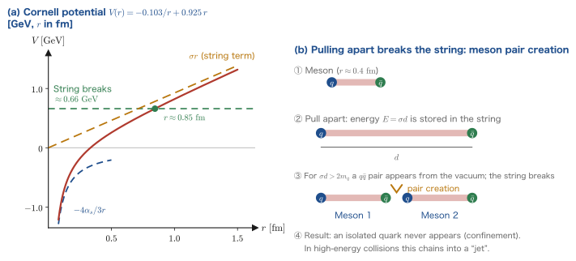
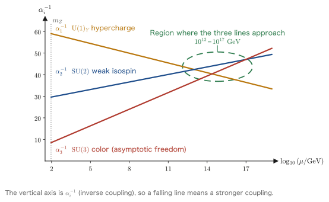
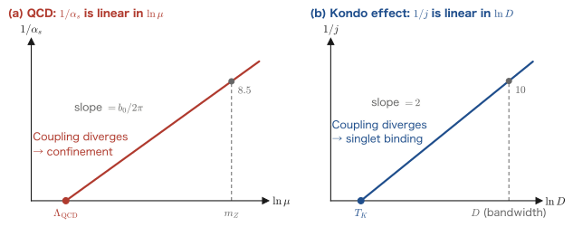

Chapter 3Dynamics of Elementary Particles — The Four Forces and Conservation Laws
In Chapter 2 we followed the experiments and concepts that particle physics has accumulated from the end of the nineteenth century to the present. The cast of characters is now complete: six kinds of quarks, six kinds of leptons, and a handful of particles that carry the forces acting among them. From here on, the question is how these particles interact.
However, treating interactions head-on requires the heavy machinery of quantum field theory. One writes down matrix elements, multiplies by spinors, carries out momentum integrals, and deals with divergences. That is the work of Chapter 8 and beyond. Before that, this chapter trains us to think in pictures, namely the pictures called Feynman diagrams.
What is remarkable about Feynman diagrams is that they are not mere illustrations but sets of instructions for a calculation. If we translate lines and vertices according to the rules, we can write down mechanically the formulas that give scattering cross sections and decay rates. We shall learn those translation rules (the Feynman rules) in Chapter 8, but we can already learn now “which diagrams can be drawn” and “which diagrams cannot.” And in fact, most of the qualitative conclusions of particle physics—which reactions occur and which do not, which decays are fast and which are slow—are already determined at the level of the diagram.
What decides whether a diagram can be drawn is the conservation laws. Energy, momentum, and angular momentum are conserved, of course, and so are “numbers” such as electric charge, baryon number, lepton number, and strangeness. Moreover, and this is the troublesome part, which numbers are conserved depends on the type of interaction. The strong and electromagnetic interactions conserve quark flavor, but the weak interaction does not. Parity is conserved by the strong and electromagnetic forces but is flagrantly violated by the weak force. Getting this map of “who violates what” into our heads is the other goal of this chapter.
Finally, we see that the “strength” of the four forces in fact depends on energy—the running coupling constant. This may be the most familiar topic for materials scientists, because the equation governing the running coupling constant is none other than the renormalization group equation used for the Kondo effect and critical phenomena. Here (to lowest order) particle physics and condensed matter physics literally share equations of the same form.
- The strength, range, and mediator particles of the four forces (strong force, electromagnetic force, weak force, gravity), and how to make coupling constants dimensionless
- The relation between the mass $m$ of the mediator particle and the range of the force $R\sim\hbar/mc$, and the derivation of the Yukawa potential
- That QED has only one fundamental vertex, and that every QED process can be written as a combination of it
- What a virtual particle is ($p^2\neq m^2$), and its relation to the uncertainty relation
- The $s$/$t$/$u$-channel diagrams of Møller scattering, Bhabha scattering, Compton scattering, and pair annihilation
- Why QCD has three color charges and eight gluons, gluon self-coupling, confinement, and asymptotic freedom
- The color-singlet condition for hadrons (mesons $q\bar q$ and baryons $qqq$), and the OZI rule
- The charged current ($W^\pm$) and neutral current ($Z$) of the weak interaction, generation mixing through the Cabibbo angle, and the GIM mechanism
- A table of conservation laws, and which interaction violates what; a procedure for deciding whether a reaction is forbidden
- The running coupling constant and the renormalization group, and an overview of electroweak unification and grand unification
3.1 The Four Forces
3.1.1 Counting the forces as four
The forces acting in nature are currently classified into four: the strong force, the electromagnetic force, the weak force, and gravity. Counting “four” is a product of history, not something derived from first principles. Indeed, as we shall see at the end of this chapter (Section 3.6), the electromagnetic and weak forces have already been merged into a single electroweak interaction, and in that sense there are three forces. The goal of grand unified theories (Chapter 15) is to unify the strong force with them as well, and superstring theory aims to include even gravity.
Even so, the division into “four forces” is extremely useful in practice. This is because, at everyday energy scales (a few GeV or below), the four differ in both strength and range by orders of magnitude. They differ so much that it is obvious at a glance which force governs which phenomenon.
| Force | Mediator | Spin | Mass | Dimensionless coupling constant | Range | Typical decay time |
|---|---|---|---|---|---|---|
| Strong force | Gluon $g$ (8 types) | 1 | 0 | $\alpha_s \sim 1$ | $\sim 1\ \mathrm{fm}$ (confinement) | $10^{-24}\text{–}10^{-22}\ \mathrm{s}$ |
| Electromagnetic force | Photon $\gamma$ | 1 | 0 | $\alpha = 1/137.036$ | $\infty$ | $10^{-20}\text{–}10^{-16}\ \mathrm{s}$ |
| Weak force | $W^\pm,\ Z^0$ | 1 | $80.377,\ 91.188\ \mathrm{GeV}$ | $\alpha_W \approx 1/30$ (low-energy effective: $G_F m_p^2\approx 10^{-5}$) | $\sim 2\times10^{-3}\ \mathrm{fm}$ | $10^{-13}\ \mathrm{s}\text{–}10^{3}\ \mathrm{s}$ |
| Gravity | Graviton (undiscovered) | 2 | 0 | $\alpha_G = 5.9\times10^{-39}$ | $\infty$ | — |
Caution: Comparisons of “strength” depend on context
Looking at the “dimensionless coupling constant” column of Table 3.1, you may be surprised that the weak force ($1/30$) is stronger than the electromagnetic force ($1/137$). Indeed it is. The weak interaction is “weak” not because its coupling constant is small but because the mediators $W,Z$ are heavy. To exchange a heavy particle virtually, one must borrow a large amount of energy, and the amplitude is suppressed accordingly (Section 3.1.3).
Therefore, when we speak of the “strength of a force,” we must always say at which energy scale the comparison is made. For $q^2 \ll m_W^2$ the weak force is weaker than the electromagnetic force by a factor of about $(q^2/m_W^2)$, but for $q^2 \sim m_W^2$ the two are comparable. This is the physical content of electroweak unification (Section 3.6).
3.1.2 Making coupling constants dimensionless
To compare the four forces, we first need a common yardstick. That is the dimensionless coupling constant.
In the case of the electromagnetic force, what determines the strength of the Coulomb force is the charge $e$. In SI units, $e = 1.602\times10^{-19}\ \mathrm{C}$ is a quantity with dimensions, so as it stands we can say neither “large” nor “small.” We therefore divide by the other constants of nature $\hbar$ and $c$ to make it dimensionless. The result is the fine-structure constant.
Derivation: Checking that $\alpha$ really is $1/137$
Step 1: Compute the numerator. From the Coulomb constant $1/(4\pi\varepsilon_0)=8.988\times10^{9}\ \mathrm{N\,m^2/C^2}$ and $e=1.602\times10^{-19}\ \mathrm{C}$,
$$ \frac{e^2}{4\pi\varepsilon_0} = 8.988\times10^{9}\times(1.602\times10^{-19})^2 = 2.307\times10^{-28}\ \mathrm{J\,m} $$Step 2: Compute the denominator. Convert $\hbar c = 197.327\ \mathrm{MeV\,fm}$ back to SI. Since $1\ \mathrm{MeV}=1.602\times10^{-13}\ \mathrm{J}$ and $1\ \mathrm{fm}=10^{-15}\ \mathrm{m}$,
$$ \hbar c = 197.327\times1.602\times10^{-13}\times10^{-15} = 3.161\times10^{-26}\ \mathrm{J\,m} $$Step 3: Divide. Both have the same dimension $\mathrm{J\,m}$, so the ratio is dimensionless:
$$ \alpha = \frac{2.307\times10^{-28}}{3.161\times10^{-26}} = 7.298\times10^{-3} = \frac{1}{137.0} $$Step 4: How to write it in natural units. Setting $\hbar=c=1$ and further adopting Heaviside–Lorentz units ($\varepsilon_0=1$), Eq. \eqref{eq:3-alpha} simply becomes
$$ \alpha = \frac{e^2}{4\pi}, \qquad\text{that is}\qquad e = \sqrt{4\pi\alpha} = 0.3028 $$In this book we use this convention from now on. Each vertex of a Feynman diagram carries one factor of $e=\sqrt{4\pi\alpha}$, and squaring the amplitude to obtain a probability gives a power of $\alpha$ (Chapter 8).
The other forces can be made dimensionless in the same way. For gravity, what corresponds to “charge” is mass. Writing the gravitational force between two protons in the same form as the Coulomb force, we have
$$ \begin{equation} \alpha_G \equiv \frac{G m_p^2}{\hbar c} = \frac{6.674\times10^{-11}\times(1.673\times10^{-27})^2}{3.161\times10^{-26}} = 5.9\times10^{-39} \label{eq:3-alphaG} \end{equation} $$The ratio to the electromagnetic force is $\alpha/\alpha_G = 1.2\times10^{36}$. Between two protons, gravity is weaker than the electric force by 36 orders of magnitude. This is why gravity can be ignored in particle physics.
Physical Meaning: Why does gravity dominate in everyday life?
Gravity is weaker by 36 orders of magnitude, yet we feel gravity and do not feel the electromagnetic force (magnets aside). Why? The answer is that electric charge has a sign but mass does not.
Matter contains almost equal numbers of positive and negative charges, so seen from afar it is electrically neutral, and the Coulomb forces of the two signs cancel almost completely. Mass, on the other hand, is always positive, so no cancellation occurs and the contributions simply add up. The Earth contains $M_E/m_p = 3.6\times10^{51}$ nucleons, so even though each individual coupling is $\alpha_G = 5.9\times10^{-39}$, the sum $N\alpha_G \approx 2\times10^{13}$ exceeds $\alpha = 1/137$ by more than ten orders of magnitude. In other words, the gravitational force that the Earth exerts on one proton equals the Coulomb force due to a charge
$$ \frac{Q}{e} = \frac{N\alpha_G}{\alpha} = \frac{3.6\times10^{51}\times5.9\times10^{-39}}{7.30\times10^{-3}} \approx 3\times10^{15} $$placed at the same distance. This is why gravity acts even between neutral bodies.
This “screening by neutralization” follows the same logic as the screening familiar in materials science. The Coulomb interaction in a metal is cut off at the Thomas–Fermi length because positive and negative charges move and cancel. As we shall see in Section 3.1.3 below, this correspondence is not an analogy: (within the range of the static longitudinal response) it can be written with formulas of the same form.
3.1.3 Range and the mass of the mediator
The range of a force is determined by the mass of the mediator. This relation can be derived semiquantitatively from the uncertainty relation.
Derivation: $R \sim \hbar/(mc)$ (range of a force)
Step 1: Borrow energy. To create a particle of mass $m$ out of “nothing,” we need at least the rest energy $\Delta E = mc^2$. By the law of energy conservation this is not allowed. However, for a time $\Delta t$ only, a “loan” is permitted as long as the uncertainty relation
$$ \Delta E\,\Delta t \gtrsim \hbar $$is satisfied.
Step 2: Find the time for which we can borrow. Substituting $\Delta E = mc^2$,
$$ \Delta t \lesssim \frac{\hbar}{mc^2} $$Step 3: Find the distance traveled in that time. The particle can travel at most at the speed of light $c$, so the range is
$$ R \lesssim c\,\Delta t = \frac{\hbar}{mc} $$This is none other than the reduced Compton wavelength $\hbar/(mc)$ of a particle of mass $m$ (it differs by a factor of $2\pi$ from the Compton wavelength $h/(mc)$, which contains $2\pi$).
Step 4: Insert numbers. Using $\hbar c = 197.327\ \mathrm{MeV\,fm}$, we have $R = \hbar c/(mc^2)$.
- Photon ($m=0$): $R=\infty$. This is why the Coulomb force reaches to infinity.
- Pion ($m_\pi = 139.57\ \mathrm{MeV}$): $R = 197.327/139.57 = 1.41\ \mathrm{fm}$. This is the range of the nuclear force, that is, the size of a single nucleon itself (the radius of the whole nucleus, $R\approx1.2A^{1/3}\ \mathrm{fm}$, is larger than this).
- $W$ boson ($m_W = 80377\ \mathrm{MeV}$): $R = 197.327/80377 = 2.46\times10^{-3}\ \mathrm{fm}$. Less than one-thousandth of the proton radius.
If we proceed a little more carefully, we obtain even the form of the potential for the exchange of a particle of mass $m$. This is the argument of Yukawa (1935).
Derivation: The Yukawa potential
Step 1: Write the static field equation. The equation satisfied by a scalar field $\phi$ of mass $m$ (the Klein–Gordon equation, Chapter 9) is, in natural units,
$$ \left(\partial_t^2 - \nabla^2 + m^2\right)\phi = \rho $$Here $\rho$ is the source. Since we look for a time-independent static solution, we set $\partial_t^2\to0$ and place a point source $\rho = g\,\delta^3(\bm{r})$:
$$ \left(-\nabla^2 + m^2\right)\phi(\bm{r}) = g\,\delta^3(\bm{r}) $$Step 2: Fourier transform. Expanding as $\phi(\bm{r}) = \int \frac{\dd^3q}{(2\pi)^3}\,\tilde\phi(\qq)\,\ee^{\ii\qq\cdot\bm{r}}$, we have $-\nabla^2 \to \abs{\qq}^2$, so
$$ \left(\abs{\qq}^2 + m^2\right)\tilde\phi(\qq) = g \quad\Longrightarrow\quad \tilde\phi(\qq) = \frac{g}{\abs{\qq}^2 + m^2} $$This $1/(\abs{\qq}^2+m^2)$ is the static limit of the propagator that we shall study in Chapter 8. The structure “the mass of the mediator enters the denominator” appears here.
Step 3: Return to position space. We carry out the angular integration first. Letting $\qq\cdot\bm{r} = qr\cos\theta$, we have
$$ \phi(r) = \frac{g}{(2\pi)^3}\int_0^\infty \dd q\, q^2 \frac{1}{q^2+m^2} \int_0^{2\pi}\!\dd\varphi\int_{-1}^{1}\!\dd(\cos\theta)\,\ee^{\ii q r\cos\theta} $$The inner integral is $2\pi \cdot \dfrac{2\sin qr}{qr}$. Hence
$$ \phi(r) = \frac{g}{(2\pi)^2}\cdot\frac{2}{r}\int_0^\infty \dd q\,\frac{q\sin qr}{q^2+m^2} $$Step 4: Carry out the remaining integral. $\displaystyle\int_0^\infty \frac{q\sin qr}{q^2+m^2}\dd q = \frac{\pi}{2}\ee^{-mr}$ (it suffices to pick up the pole at $q=\ii m$ by complex integration; see Appendix A, Section A.6). Therefore
Step 5: Read off the result. For $m\to0$ we get $\phi\to g/(4\pi r)$, that is, the Coulomb potential. For $m\neq0$ the exponential factor $\ee^{-mr}$ appears, and the potential vanishes rapidly beyond the distance $1/m = \hbar/(mc)$. The range that we estimated up to Step 3 has come out properly in the form of an exponential decay.
Connection to Materials Science: The Yukawa potential and Thomas–Fermi screening are the same formula
If Eq. \eqref{eq:3-yukawa} gave you a sense of déjà vu, you are right. The screened Coulomb potential in a metal has exactly the same form.
When a point charge $Q$ is placed in a metal, the conduction electrons gather and screen it. In the Thomas–Fermi approximation (“Introduction to Density Functional Theory,” Chapter 8, and “Introduction to Linear Response Theory,” Chapter 10, “Screening — Thomas–Fermi and the Lindhard Function”), the dielectric function is
$$ \varepsilon(\qq) = 1 + \frac{k_{\mathrm{TF}}^2}{\abs{\qq}^2}, \qquad k_{\mathrm{TF}}^2 = 4\pi e^2 N(E_F) $$(in Gaussian units, with $N(E_F)$ the density of states at the Fermi level), so the screened interaction is
$$ V_{\mathrm{eff}}(\qq) = \frac{4\pi e^2}{\abs{\qq}^2\,\varepsilon(\qq)} = \frac{4\pi e^2}{\abs{\qq}^2 + k_{\mathrm{TF}}^2} \quad\xrightarrow{\ \text{Fourier}\ }\quad V_{\mathrm{eff}}(r) = \frac{e^2}{r}\,\ee^{-k_{\mathrm{TF}} r} $$Yukawa’s $m$ and the Thomas–Fermi $k_{\mathrm{TF}}$ enter at the same place in the same form. In natural units, $m$ and $k_{\mathrm{TF}}$ both have the dimension of an inverse length and cannot be distinguished. Therefore
In a metal, if we restrict attention to the static longitudinal (Coulomb) component, the photon can be said to have acquired the mass $\hbar c\,k_{\mathrm{TF}}$. This is not an analogy; it is the same pole of the same propagator. However, we must not forget the qualification. In a normal metal, the component that acquires mass is only the static longitudinal component, and the static mass of the transverse wave (the magnetic field) remains zero (this is why a static magnetic field penetrates a normal metal; the attenuation by the skin effect concerns alternating fields). It is in a superconductor that even the transverse photon acquires mass, and that is the Anderson–Higgs mechanism of Chapter 13.
Let us insert numbers. From the conduction electron density of copper, $n=8.47\times10^{28}\ \mathrm{m^{-3}}$, we get $k_F=(3\pi^2 n)^{1/3}=1.36\ \mathrm{\AA^{-1}}$, and the Thomas–Fermi wavenumber is $k_{\mathrm{TF}}=\sqrt{4k_F/(\pi a_0)}=1.81\ \mathrm{\AA^{-1}}$ (screening length $0.55\ \mathrm{\AA}$). Putting this into Eq. \eqref{eq:3-photonmass}, we obtain
$$ m_\gamma^{\rm eff} = 197.327\ \mathrm{MeV\,fm}\times1.81\times10^{-5}\ \mathrm{fm^{-1}} = 3.6\ \mathrm{keV} $$Inside copper, the photon behaves as if it had a mass of about 3.6 keV—but, to repeat, only toward a static electric field.
In a superconductor the nature of the story changes. This is because the London equation $\nabla^2\bm{A} = \bm{A}/\lambda_L^2$ gives the transverse gauge field a static Proca mass $\hbar c/\lambda_L$ (Chapter 13). For lead ($\lambda_L \approx 39\ \mathrm{nm}$), $m_\gamma = \hbar c/\lambda_L = 5.06\ \mathrm{eV}$, which numerically is even smaller than the 3.6 keV of copper. What is dramatic nonetheless is that the component acquiring mass changes, so that the static magnetic field is expelled (the Meissner effect). The mathematics identical to that of the $W,Z$ masses (the Anderson–Higgs mechanism, Chapter 13) is that of this transverse-wave mass, whereas Thomas–Fermi screening is merely an ordinary Debye mass, not accompanied by symmetry breaking. The correspondence “the same pole of the same propagator” is a rewording that holds within the range of the static longitudinal response.
![(a) Range of the Yukawa potential. The vertical axis is r φ(r) normalized to 1 at r=0. The photon (m=0) is the horizontal line at 1, the π meson (R=1.4 fm) decays gently, and the W boson (R=0.0025 fm) drops vertically at the origin and sticks to the horizontal axis. (b) Logarithmic bar chart of the dimensionless coupling constants. Gravity is about 10^-38.2, the weak interaction (at low energy) about 10^-5, electromagnetism 1/137, and the strong force about 1; gravity alone lies 33 orders of magnitude below.](figs/ch03_fig3-1.svg)
3.1.4 Measuring “strength” by lifetime
The coupling constant is the language of theory. When experimentalists judge the strength of a force, they use a more direct yardstick: the rate of decay.
The decay rate $\Gamma$ (the decay probability per unit time) is proportional to the square of the amplitude. Since the amplitude carries a factor of the square root of the coupling constant for each vertex, a typical process with two vertices has $\Gamma \propto \alpha^2$. If the coupling constants differ by orders of magnitude, so do the lifetimes.
| Decay | Force responsible | Decay width $\Gamma$ or lifetime $\tau$ | Converted to lifetime |
|---|---|---|---|
| $\Delta^{++}\to p+\pi^+$ | Strong force | $\Gamma = 117\ \mathrm{MeV}$ | $5.6\times10^{-24}\ \mathrm{s}$ |
| $\rho^0\to\pi^+\pi^-$ | Strong force | $\Gamma = 147\ \mathrm{MeV}$ | $4.5\times10^{-24}\ \mathrm{s}$ |
| $\pi^0\to\gamma\gamma$ | Electromagnetic force | $\tau = 8.43\times10^{-17}\ \mathrm{s}$ | $8.4\times10^{-17}\ \mathrm{s}$ |
| $\Sigma^0\to\Lambda+\gamma$ | Electromagnetic force | $\tau = 7.4\times10^{-20}\ \mathrm{s}$ | $7.4\times10^{-20}\ \mathrm{s}$ |
| $\pi^+\to\mu^++\nu_\mu$ | Weak force | $\tau = 2.603\times10^{-8}\ \mathrm{s}$ | $2.6\times10^{-8}\ \mathrm{s}$ |
| $\mu^-\to e^-+\bar\nu_e+\nu_\mu$ | Weak force | $\tau = 2.197\times10^{-6}\ \mathrm{s}$ | $2.2\times10^{-6}\ \mathrm{s}$ |
| $n\to p+e^-+\bar\nu_e$ | Weak force | $\tau = 878.4\ \mathrm{s}$ | $8.8\times10^{2}\ \mathrm{s}$ |
Math Note: Conversion between decay width and lifetime
The mass distribution of an unstable particle is of Breit–Wigner form, and its full width at half maximum (FWHM) $\Gamma$ and its lifetime $\tau$ are related by
$$ \tau = \frac{\hbar}{\Gamma}, \qquad \hbar = 6.582\times10^{-22}\ \mathrm{MeV\,s} $$(for details see Chapter 8, Section 8.7.4, and Appendix B, Section B.4). For example, for the $\Delta^{++}$ with $\Gamma=117\ \mathrm{MeV}$,
$$ \tau = \frac{6.582\times10^{-22}}{117} = 5.63\times10^{-24}\ \mathrm{s} $$This time is almost the same as the time it takes light to cross the diameter of a proton ($\sim1.7\ \mathrm{fm}$), $\sim 5\times10^{-24}\ \mathrm{s}$. In other words, the $\Delta$ particle “breaks apart the instant it is formed.” Strong-interaction decays cluster around $10^{-23}\ \mathrm{s}$ because there is a physical lower limit: a particle cannot decay any faster than this.
The lifetimes in Table 3.2 span 27 orders of magnitude, from $10^{-24}$ seconds to $10^{3}$ seconds. Merely by looking at the order of magnitude of a measured lifetime, an experimentalist can tell “this is a strong decay” or “this is a weak decay.” The classification of elementary particles began with precisely this classification by lifetime (Chapter 2).
3.2 Quantum Electrodynamics (QED)
3.2.1 The one and only fundamental vertex
Quantum electrodynamics (QED) is the most precisely tested theory in physics. And its entire content is condensed into a single diagram—the fundamental vertex.
The fundamental vertex is a three-way junction: “one line of a charged particle comes in, one goes out, and from that point a single photon line sprouts.” Every diagram that can be drawn in QED is nothing other than a collection of such junctions with the ends of the lines joined together. Conversely, a process that cannot be drawn by combining these junctions does not occur in QED.
Definition: The fundamental vertex of QED
Two fermion lines (lines of charged particles such as electrons, muons, and quarks) and one photon line meet at a single point. We call this point a vertex. Each vertex contributes to the amplitude a factor
$$ \ii e\,\gamma^\mu, \qquad e = \sqrt{4\pi\alpha} = 0.303 $$($\gamma^\mu$ are the Dirac matrices, introduced in Chapter 9). For a particle of general charge $q$ the factor is $-\ii q\gamma^\mu$, and for the electron $q=-e$, which gives the form above. Sign conventions differ among textbooks; this book uses $\ii e\gamma^\mu$ of Chapter 10, Section 10.1.3 (where $e$ is written $g_e$) throughout all chapters. What matters is the magnitude, $e=\sqrt{4\pi\alpha}$: each additional vertex multiplies the amplitude by $\sqrt{\alpha}$ and the probability by $\alpha$.
At a vertex, charge, lepton number, and flavor are all conserved. Since the photon has no charge, the incoming fermion and the outgoing fermion must be of the same kind (a vertex $e^-\to\mu^-+\gamma$ does not exist).
3.2.2 There are eight ways to read a vertex
There is only one picture of the three-way junction, but there are many ways to assign “which lines come in and which go out.” Taking time to flow from left to right, each of the three lines has a binary choice: it is either on the left (incoming) or on the right (emitted). Formally, then, there are $2^3=8$ ways to read it.
Figure 3.2(b) shows four representative readings. The remaining four are also just re-readings of the same three-way junction: the two with the positron in the leading role, $e^+\to e^++\gamma$ and $e^++\gamma\to e^+$, and the two with all three lines moved to the same side, $\text{vacuum}\to e^++e^-+\gamma$ and $e^++e^-+\gamma\to\text{vacuum}$. Together this makes eight readings, that is, $2^3$ of them.
Definition: The eight readings of the fundamental vertex (time runs from left to right)
- $e^-\to e^-+\gamma$: bremsstrahlung (emission of a photon)—Figure 3.2(b)(1)
- $e^-+\gamma\to e^-$: absorption—Figure 3.2(b)(4)
- $e^+\to e^++\gamma$: emission by a positron
- $e^++\gamma\to e^+$: absorption by a positron
- $e^++e^-\to\gamma$: pair annihilation—Figure 3.2(b)(2)
- $\gamma\to e^++e^-$: pair production—Figure 3.2(b)(3)
- $\text{vacuum}\to e^++e^-+\gamma$: creation from the vacuum
- $e^++e^-+\gamma\to\text{vacuum}$: annihilation into the vacuum
All eight readings carry exactly the same factor $\ii e\gamma^\mu$. That “an electron emits a photon” and “a photon becomes an electron pair” can be written by one and the same formula is something that did not exist in nonrelativistic quantum mechanics. Here lies the greatest benefit of having introduced antiparticles (Chapter 9).
Caution: A vertex does not occur by itself
None of the readings in Figure 3.2(b) actually occurs as it stands, because energy and momentum cannot be conserved at the same time.
For example, consider (1), $e^-\to e^-+\gamma$, in the rest frame of the electron. The energy of the initial state is $m_e$ and the momentum is $0$. In the final state the photon carries momentum $\bm{k}\neq0$, so momentum conservation requires the electron to carry $-\bm{k}$, and then the energy becomes $\sqrt{m_e^2+\abs{\bm{k}}^2}+\abs{\bm{k}} > m_e$. Extra energy would be needed, so the process is impossible.
Therefore a fundamental vertex always appears connected to other vertices. A single vertex is merely a “component” of an actual process. The smallest QED process that can physically occur is a diagram with two vertices—a diagram whose amplitude is $\mathcal{O}(e^2)=\mathcal{O}(\alpha)$ and whose probability (cross section) is therefore $\mathcal{O}(\alpha^2)$.
3.2.3 Virtual particles — going off the mass shell
When two vertices are connected, the line between them appears in neither the initial state nor the final state. We call this line, which cannot be seen from outside, an internal line, and the particle running along it a virtual particle.
Definition: Real and virtual particles
For a particle with four-momentum $p^\mu = (E,\pp)$, let $p^2 \equiv p\cdot p = E^2 - \abs{\pp}^2$ (the metric is $g^{\mu\nu}=\mathrm{diag}(1,-1,-1,-1)$).
- Real particle (external line): $p^2 = m^2$. We say that it is “on the mass shell.” Every particle that can be observed in a detector is of this kind.
- Virtual particle (internal line): $p^2 \neq m^2$. It is off the mass shell (off shell). It is not seen in observation.
On an internal line, energy and momentum are exactly conserved at each vertex. What is sacrificed is the “mass-shell condition.” It is often written that “a virtual particle violates energy conservation,” but in a covariant treatment the conservation law is not violated; what is violated is $p^2=m^2$.
Physical Meaning: The greater the virtuality, the smaller the amplitude
An internal line carries the propagator $\dfrac{1}{p^2-m^2}$ (the Feynman rules of Chapter 8). The farther from the mass shell (the larger $\abs{p^2-m^2}$), the larger the denominator and the smaller the contribution. This is a restatement of the uncertainty relation: “the larger the debt, the shorter the time it can be held.”
This structure explains the range of a force once again. In the weak interaction the internal line is a $W$ boson, and at low energy ($\abs{q^2}\ll m_W^2$) we have
$$ \frac{1}{q^2-m_W^2} \approx -\frac{1}{m_W^2} $$The amplitude is proportional to $g_w^2/m_W^2$, and this is the true identity of the Fermi constant
Finding $g_w$ in reverse from $G_F = 1.166\times10^{-5}\ \mathrm{GeV^{-2}}$ gives
$$ g_w^2 = \frac{8 m_W^2 G_F}{\sqrt2} = \frac{8\times(80.377)^2\times1.166\times10^{-5}}{1.4142} = 0.426, \qquad \alpha_W \equiv \frac{g_w^2}{4\pi} = 0.0339 = \frac{1}{29.5} $$This is how the value $\alpha_W\approx1/30$ listed in Table 3.1 is obtained. To repeat: the weak force is weak not because $\alpha_W$ is small, but because $m_W^2$ sits in the denominator.
3.2.4 Connecting vertices — $t$ / $u$ / $s$ channels
Let us list the $2\to2$ processes that can be built from two vertices. Which diagrams can be drawn is determined by what we prepare as external lines.
We classify the square of the four-momentum carried by the internal line connecting the two vertices by the Mandelstam variables. Taking the incoming particles to be $1,2$ and the outgoing particles to be $3,4$, we define
$$ \begin{equation} s = (p_1+p_2)^2,\qquad t = (p_1-p_3)^2,\qquad u = (p_1-p_4)^2 \label{eq:3-mandelstam} \end{equation} $$(for details see Chapter 4). A diagram whose internal line carries $s$ is called an $s$-channel diagram, one that carries $t$ a $t$-channel diagram, and one that carries $u$ a $u$-channel diagram. The $s$-channel is the diagram in which “the particles first merge and then separate,” while the $t$- and $u$-channels are the diagrams in which “the particles throw something to each other as they pass.”
Processes in which photons appear on external lines can be counted in the same way: Compton scattering $\gamma e^-\to\gamma e^-$ and pair annihilation $e^+e^-\to\gamma\gamma$.
| Process | Name | $s$ | $t$ | $u$ | Number of diagrams |
|---|---|---|---|---|---|
| $e^-e^-\to e^-e^-$ | Møller scattering | — | Yes | Yes | 2 |
| $e^+e^-\to e^+e^-$ | Bhabha scattering | Yes | Yes | — | 2 |
| $\gamma e^-\to\gamma e^-$ | Compton scattering | Yes | — | Yes | 2 |
| $e^+e^-\to\gamma\gamma$ | Pair annihilation | — | Yes | Yes | 2 |
| $\gamma\gamma\to e^+e^-$ | Pair production (Breit–Wheeler) | — | Yes | Yes | 2 |
| $e^+e^-\to\mu^+\mu^-$ | Muon pair production | Yes | — | — | 1 |
Why?: How to tell which channels exist
The mechanical procedure is as follows.
- $s$-channel: Can the two incoming particles be collapsed into a single internal line? $e^+e^-$ can become one photon, but $e^-e^-$ has charge $-2$ and so cannot become a neutral photon. Hence Møller scattering has no $s$-channel.
- $t$-channel: Can particle 1 and particle 3 be joined at a single vertex? If they are the same kind of particle, this is always possible.
- $u$-channel: Can particle 1 and particle 4 be joined at a single vertex? This is possible if the two final-state particles are identical (or if one of them is the same kind as particle 1). In $e^+e^-\to\mu^+\mu^-$ the final state is unrelated to the electron, so neither a $t$- nor a $u$-channel diagram can be drawn, and only the $s$-channel remains.
“If there are two identical particles, the diagram with them swapped must always be added as well”—for fermions it is added with a changed sign (antisymmetrization), for bosons as it is (symmetrization). Figure 3.3(a)(b) and Figure 3.4(c)(d) are examples of this rule.
Connection to Materials Science: Measuring annihilation — positron annihilation spectroscopy
The pair annihilation $e^+e^-\to\gamma\gamma$ of Figure 3.4(c)(d) is not a story confined to particle-physics textbooks. It is used routinely as a method of materials characterization: positron annihilation spectroscopy (PAS).
When positrons emitted from sources such as $^{22}\mathrm{Na}$ are injected into a sample, they thermalize and then annihilate with electrons, emitting two $\gamma$ rays of 511 keV. In the center-of-mass frame the two rays travel in exactly opposite directions, each with $511\ \mathrm{keV}=m_ec^2$. In the laboratory frame, however, the annihilating electron–positron pair has a total momentum $\pp$, so the angle between the two $\gamma$ rays deviates from $180^\circ$. From momentum conservation, the deviation for the transverse component $p_T$ is
$$ \theta \simeq \frac{p_T}{m_e c} $$Because the positron has thermalized, $\pp$ is almost exactly the momentum of the electron itself, so by measuring the angular distribution of $\theta$ one can see the momentum distribution of the electrons, that is, the Fermi surface (the 2D-ACAR method).
Let us put in numbers. For copper the Fermi momentum is $p_F=\hbar k_F = 1.055\times10^{-34}\times1.36\times10^{10} = 1.43\times10^{-24}\ \mathrm{kg\,m/s}$, while $m_ec = 2.73\times10^{-22}\ \mathrm{kg\,m/s}$, so
$$ \theta_{\max} \simeq \frac{1.43\times10^{-24}}{2.73\times10^{-22}} = 5.2\times10^{-3}\ \mathrm{rad} = 5.2\ \mathrm{mrad} $$The measured angular width in ACAR is precisely this several milliradians. The longitudinal component appears as a Doppler shift $\Delta E = p_L c/2$, which for $p_F$ gives $\Delta E \approx 1.3\ \mathrm{keV}$. This is why the Doppler broadening of the 511 keV peak is of the order of keV, and it is used to detect vacancy defects (at a vacancy the electron density is low and the momentum distribution becomes narrower).
The particle-physics process of particle–antiparticle annihilation has become, as it is, a measuring instrument for Fermi surfaces and defects. It is an example of Dirac’s prediction of the antiparticle, which we saw in Chapter 2, coming down to the working floor of materials engineering.
3.2.5 Why does the perturbative expansion work?
If we add two more vertices (that is, exchange one extra photon), the number of diagrams increases. Its contribution is smaller by a factor of $\alpha \approx 1/137$ in probability, and so is a correction of less than 1%. Thanks to the smallness of $\alpha$, the lowest-order diagrams alone explain experiments to 1% accuracy, and if necessary the accuracy can be raised by adding the next order. This is the perturbative expansion.
Example: The anomalous magnetic moment of the electron, $g-2$
This is the most famous example in physics of how well the perturbative expansion works. The Dirac equation (Chapter 9) predicts that the $g$-factor of the electron is exactly $2$. The measured value, however, deviates slightly. QED expands this deviation $a_e = (g-2)/2$ as follows (Schwinger 1948):
$$ a_e = \frac{\alpha}{2\pi} + C_2\left(\frac{\alpha}{\pi}\right)^2 + C_3\left(\frac{\alpha}{\pi}\right)^3+\cdots $$The lowest-order term alone gives
$$ \frac{\alpha}{2\pi} = \frac{7.2974\times10^{-3}}{6.2832} = 1.1614\times10^{-3} $$The measured value is $a_e = 1.15965218\times10^{-3}$. Drawing just one diagram gives agreement to three significant figures. When the calculation is carried through fifth order ($\alpha^5$), theory and experiment agree over about 10 significant digits of $a_e$ (Chapter 10, Section 10.6.5). This is why it is called “the most precisely tested prediction in physics.” The comparison, however, requires an independently measured $\alpha$, and the present limit of the agreement is set not by the number of digits of the theory but by the discrepancy between measured values of $\alpha$ (atom interferometry with Cs and with Rb).
Incidentally, when the same quantity is measured for the muon, the story is more involved. As of 2021, a discrepancy of $\sim2.5\times10^{-9}$ (about $5\sigma$) was reported between the measured value and the Standard Model prediction that evaluated the hadronic vacuum polarization from $e^+e^-$ data, and it was called the “muon $g-2$ problem.” However, with the results of lattice QCD calculations of the hadronic vacuum polarization (BMW 2021 onward) and the 2025 theory white paper, the Standard Model prediction and experiment are in near agreement. The focus has therefore shifted from “experiment vs. theory” to resolving the discrepancy between two evaluation methods on the theory side, lattice calculations and $e^+e^-$ data. We treat this in detail in Chapter 15, Section 15.1.5.
Caution: When the perturbative expansion does not work
The smallness of $\alpha$ is a stroke of luck for QED, not a general rule. In the strong interaction $\alpha_s\sim1$ (exceeding 1 at low energies), so the series in Eq. \eqref{eq:3-pert} does not converge. The more diagrams we add, the larger the contribution becomes.
Hence, in low-energy QCD, perturbative calculation with Feynman diagrams cannot in principle be used, and instead a nonperturbative method called lattice QCD (dividing spacetime into a lattice and evaluating the path integral numerically) is used. Materials scientists will find this familiar—in that the Euclideanized path integral is evaluated stochastically, it is the same idea as the quantum Monte Carlo method. Indeed, there is also an exchange of methods: the Hybrid Monte Carlo devised in lattice QCD is also used on the condensed-matter side (for example, auxiliary-field Monte Carlo for the Hubbard model). However, the worldline Monte Carlo, determinant Monte Carlo, and diffusion and variational Monte Carlo that are mainstream in condensed matter differ in both formulation and target, so it is not “exactly the same.” Thanks to the asymptotic freedom seen in Section 3.3, $\alpha_s$ becomes small at high energies, and perturbation theory is revived.
3.3 Quantum Chromodynamics (QCD)
3.3.1 Color charge — the third kind of charge
The strong interaction is the force between quarks and gluons. The role that electric charge plays in QED is played in QCD by color charge. Color charge, however, comes in not one kind but three kinds. We call them red ($r$), green ($g$), and blue ($b$). Of course, they have nothing whatever to do with optical colors. The name was chosen because the only thing they share is an additive structure: three kinds that add up to “colorless.”
An antiquark carries an anticolor charge $\bar r,\bar g,\bar b$ (antired, antigreen, antiblue). Leptons carry no color charge, so they feel no strong interaction at all. This is the reason why “leptons are not captured by atomic nuclei.”
Why?: Color charge was required by the $\Delta^{++}$ difficulty
The introduction of color (Greenberg 1964, Han–Nambu 1965) was motivated not by aesthetic demands but by the resolution of a contradiction.
The $\Delta^{++}$ baryon has the quark content $uuu$ and is a ground state with spin $3/2$ and orbital angular momentum $0$. To make spin $3/2$, the spins of the three $u$ quarks must all point in the same direction ($\uparrow\uparrow\uparrow$). The wave function is then
$$ \psi = \underbrace{\psi_{\text{space}}}_{\text{symmetric}(\ell=0)}\times\underbrace{\psi_{\text{spin}}}_{\text{symmetric}(\uparrow\uparrow\uparrow)}\times\underbrace{\psi_{\text{flavor}}}_{\text{symmetric}(uuu)} $$and all three factors are symmetric under exchange. But quarks are fermions, so the whole must be antisymmetric. This is a head-on contradiction with the Pauli exclusion principle.
The only way out is to introduce one more, as yet unknown, degree of freedom and make the wave function antisymmetric in it. If we introduce a degree of freedom $i=1,2,3$ taking three values (= color) and form the totally antisymmetric combination
$$ \psi_{\text{color}} = \frac{1}{\sqrt6}\,\varepsilon_{ijk}\,\ket{i}\ket{j}\ket{k} $$the contradiction disappears. However, the Pauli exclusion principle alone says only that there are “three or more colors” (if $N_c\ge3$, a combination that antisymmetrizes three quarks can always be built). That the number is exactly three follows from the measurement of the $R$ ratio described right below, and from the confinement requirement (Section 3.3.6) that $qqq$ form a color singlet—that all indices can be contracted completely with $\varepsilon_{ijk}$, leaving none over.
That there are three colors can be confirmed experimentally from the cross-section ratio of $e^+e^-$ annihilation. The process in which $e^+e^-$ at center-of-mass energy $\sqrt s$ produces a quark pair through a virtual photon (the $s$-channel diagram of Figure 3.3(d), with the final-state $e^+e^-$ replaced by $q\bar q$) has exactly the same form as the diagram with the final state replaced by $\mu^+\mu^-$. Taking the ratio therefore cancels the coupling constants and leaves only the sum of the squared charges:
| Region of $\sqrt s$ | Quarks produced | $\sum_q Q_q^2$ | Prediction for $N_c=3$ | Measured (approximate) |
|---|---|---|---|---|
| $2\ \mathrm{GeV} \lesssim \sqrt s \lesssim 3\ \mathrm{GeV}$ | $u,d,s$ | $\frac49+\frac19+\frac19=\frac23$ | $2$ | $\approx2.1$ |
| $5 \lesssim \sqrt s \lesssim 9\ \mathrm{GeV}$ | $u,d,s,c$ | $\frac{10}{9}$ | $10/3 = 3.33$ | $\approx3.6$ |
| $\sqrt s \gtrsim 11\ \mathrm{GeV}$ | $u,d,s,c,b$ | $\frac{11}{9}$ | $11/3 = 3.67$ | $\approx3.9$ |
For $N_c=1$ the predictions would be $2/3,\ 10/9,\ 11/9$, which are off from the measurements by a factor of three. In every region the measurements support $N_c=3$ (the measured values are slightly larger than the predictions because of the $\mathcal{O}(\alpha_s)$ gluon-radiation correction $1+\alpha_s/\pi$). The number of colors is a quantity that can be counted.
3.3.2 Why eight gluons rather than nine
The counterpart of the QED photon is the gluon of QCD. However, whereas the photon carries no charge, the gluon carries color charge. When a quark changes from $r$ to $g$, the gluon carries off the difference in color ($r\bar g$).
Then it seems that there should be $3\times3=9$ kinds of gluons, since there are nine combinations of a color and an anticolor. In fact, however, there are eight. Why?
Derivation: $3\otimes\bar3 = 8\oplus1$ and the expulsion of the ninth
Step 1: Write down the nine combinations. The color $\times$ anticolor states are
$$ r\bar r,\ r\bar g,\ r\bar b,\ g\bar r,\ g\bar g,\ g\bar b,\ b\bar r,\ b\bar g,\ b\bar b $$nine in all.
Step 2: Rearrange the three that do not change color. The six off-diagonal ones (such as $r\bar g$) can be left as they are. The problem is the three diagonal ones, $r\bar r, g\bar g, b\bar b$. Among their linear combinations, exactly one is special:
$$ \ket{\psi_1} = \frac{1}{\sqrt3}\left(r\bar r + g\bar g + b\bar b\right) $$This state is completely unchanged under transformations that rotate the colors among one another ($SU(3)$ transformations). That is, it is a color singlet. The remaining two independent combinations can be chosen as
$$ \ket{\psi_2} = \frac{1}{\sqrt2}\left(r\bar r - g\bar g\right), \qquad \ket{\psi_3} = \frac{1}{\sqrt6}\left(r\bar r + g\bar g - 2b\bar b\right) $$(they are orthogonal to each other and also to $\ket{\psi_1}$).
Step 3: The nine split into eight and one. The six off-diagonal states $+\ \ket{\psi_2},\ket{\psi_3}$, eight in all, form one group (an octet), and $\ket{\psi_1}$ is left alone. In the notation of group theory,
Step 4: Why is $\ket{\psi_1}$ not a physical gluon? There are two answers.
The group-theoretical answer: The gauge group of QCD is $SU(3)$, not $U(3)$. The number of generators of $SU(N)$ (= the number of gauge fields) is $N^2-1$. For $N=3$ this is $9-1=8$. The state $\ket{\psi_1}$ corresponds to the $U(1)$ part and does not belong to $SU(3)$.
The physical answer: If $\ket{\psi_1}$ existed, it would be a color singlet and hence would not be confined. Then, just like the photon, a “second electromagnetic force” with infinite range would appear, and a long-range force would act between all hadrons. No such force has been observed.
Math Note: The number of $SU(N)$ gauge fields
$SU(N)$ is the set of “$N\times N$ unitary matrices with determinant 1.” The dimension of $U(N)$ (the number of real parameters) is $N^2$, and the single condition that the determinant be 1 reduces it by one, so the dimension of $SU(N)$ is $N^2-1$. In a gauge theory, as many gauge fields (mediator particles) appear as this dimension.
- $U(1)_{\mathrm{EM}}$ (electromagnetism): $1$ → photon $\gamma$
- $SU(2)_L$ (weak isospin): $2^2-1=3$ → $W^1,W^2,W^3$ (of these, $W^{1,2}$ become $W^\pm$, and $W^3$ mixes with the $U(1)_Y$ gauge field $B$ to become $Z^0$ and $\gamma$; Section 3.6.2)
- $SU(3)$ (color): $3^2-1=8$ → eight gluons
The three generators of $SU(2)$ are the Pauli matrices $\sigma^a/2$, and the eight generators of $SU(3)$ are the Gell-Mann matrices $\lambda^a/2$ (Pauli matrices: Appendix C, Section C.1; Gell-Mann matrices: Chapter 11, Section 11.3.2). They are the same as the three generators used when treating $SU(2)$ spin rotations in condensed matter physics.
3.3.3 Gluon self-coupling
The consequence of gluons carrying color charge is a momentous one: gluons couple directly to each other. In QED the photon carries no charge, so photons do not interact with each other (at lowest order). Two laser beams crossing in vacuum simply pass through each other. Gluons are different.
3.3.4 Asymptotic freedom — a force that weakens as you get closer
The greatest consequence of the gluon self-coupling is asymptotic freedom (Gross, Politzer, Wilczek 1973; 2004 Nobel Prize). The coupling constant $\alpha_s$ becomes smaller as the distance probed is made shorter (as the energy is raised).
The running of the coupling constant in the one-loop approximation is given by the following equation (the derivation is in Chapter 11):
Here $\mu$ is the energy scale and $n_f$ is the number of quark flavors that can be produced at that scale. What matters is the sign of $b_0$.
Physical Meaning: The battle between “11” and “$-2n_f/3$”
The two terms of $b_0 = 11 - \frac23 n_f$ have different physical origins.
- $-\frac23 n_f$: the contribution of quark loops. This is exactly the same mechanism as vacuum polarization in QED. Virtual $q\bar q$ pairs form in the vacuum and polarize around a color charge, screening it. Seen from far away, the color charge looks small. That is, this acts in the direction that makes the coupling stronger at shorter distances ($\alpha_s$ increases).
- $+11$: the contribution of gluon loops. This term would not exist without the gluon self-coupling (Figure 3.5(b)(c)), and it has the opposite sign. It is called antiscreening. A cloud of gluons spreads around the color charge, and seen from far away the color charge looks larger.
If $n_f \le 16$, then $b_0 > 0$; that is, antiscreening wins. In nature $n_f=6$, so $b_0 = 11-4 = 7$ (in the region where only the five light flavors matter, $b_0=23/3=7.67$), which is indeed positive.
In QED the coefficient corresponding to $b_0$ is negative, and $\alpha$ increases with energy. Indeed, compared with $\alpha(0)=1/137.036$ one has $\hat\alpha(m_Z)=1/127.95$ (in the $\overline{\rm MS}$ definition; in the on-shell scheme $\alpha^{-1}(m_Z)=128.95$; see Chapter 10, Section 10.6.4). QED and QCD run in opposite directions.
Example: Running $\alpha_s$ from $m_Z$ up to 1 TeV
Take $\alpha_s(m_Z)=0.118$, $m_Z=91.188\ \mathrm{GeV}$, and $n_f=5$ ($b_0=23/3=7.667$). Let us run up to $\mu=1\ \mathrm{TeV}$.
$$ \ln\frac{1000}{91.188} = \ln(10.966) = 2.3948 $$ $$ \frac{1}{\alpha_s(1\,\mathrm{TeV})} = \frac{1}{0.118} + \frac{7.667}{2\pi}\times2.3948 = 8.475 + 2.922 = 11.40 $$ $$ \alpha_s(1\ \mathrm{TeV}) = 0.0877 $$Raising the energy by one order of magnitude weakens the coupling by a little under 30%. Conversely, if we run toward low energy there is a point where $1/\alpha_s$ reaches zero, and this point is
$$ \Lambda_{\mathrm{QCD}} = m_Z\,\exp\!\left(-\frac{2\pi}{b_0\,\alpha_s(m_Z)}\right) = 91.188\times\exp(-6.945) = 0.088\ \mathrm{GeV} $$(a rough one-loop, five-flavor estimate; including flavor thresholds and two-loop effects gives $\Lambda^{(3)}_{\overline{\mathrm{MS}}}\approx0.33\ \mathrm{GeV}$). In any case, a scale of order $10^2\ \mathrm{MeV}$, that is, the hadron mass scale, appears automatically as the point where the coupling constant diverges. QCD creates the hadron mass scale out of the dimensionless parameter $\alpha_s$ (dimensional transmutation).
3.3.5 Confinement and string tension
The flip side of asymptotic freedom is confinement. As the distance grows, $\alpha_s$ becomes larger and the force does not weaken. Quarks and gluons cannot be extracted singly.
From lattice QCD calculations and from the spectra of charmonium and bottomonium (Chapter 7), the potential between a quark and an antiquark is well described by the following form (the Cornell potential):
The first term corresponds to the Coulomb term of QED (the coefficient $4/3$ is a color factor; we compute it in Chapter 11). The second term is peculiar to QCD and grows in proportion to $r$. The force $F=-\dd V/\dd r = -\sigma$ is constant, independent of distance. This means that the gluon field does not spread throughout space but is squeezed into a single thin “string” (flux tube). We call $\sigma$ the string tension.
Example: Feeling the string tension in SI units
Let us convert $\sigma = 0.9\ \mathrm{GeV/fm}$ to N (newtons). Since $1\ \mathrm{GeV}=1.602\times10^{-10}\ \mathrm{J}$ and $1\ \mathrm{fm}=10^{-15}\ \mathrm{m}$,
$$ \sigma = \frac{0.9\times1.602\times10^{-10}\ \mathrm{J}}{10^{-15}\ \mathrm{m}} = 1.44\times10^{5}\ \mathrm{N} $$that is, about 15 tonnes-force. Dragging a single quark requires the same force as lifting a medium-size truck. Moreover, since this force is independent of distance, pulling the quarks 1 m apart would require an energy of $1.44\times10^5\ \mathrm{J}$ (equivalent to about 34 g of TNT). Of course, no such thing happens.
What actually happens is string breaking. When the energy stored in the string by pulling the quarks apart exceeds the rest energy of a new quark–antiquark pair, a $q\bar q$ pair is created from the vacuum, the string breaks, and two mesons result. A quark never comes out alone.

Caution: The string tension must not be identified with the line tension of a dislocation
“A linear defect has a tension and stores energy proportional to its length”—this sentence applies both to the QCD flux tube and to a dislocation in a crystal. One is therefore tempted to contrast the two casually, but the physics is fundamentally different. Let us compare them, matching both the numbers and the mechanisms.
- The magnitudes differ. The line tension of a dislocation is $T\approx \mu b^2/2$. For copper ($\mu=48\ \mathrm{GPa}$, $b=0.256\ \mathrm{nm}$) this gives $T = 1.6\times10^{-9}\ \mathrm{N}$. It differs from the QCD string tension $1.4\times10^5\ \mathrm{N}$ by 14 orders of magnitude.
- The origins differ. The line tension of a dislocation comes from the strain energy stored in an elastic continuum ($\propto \mu b^2\ln(R/r_0)$), and in fact depends logarithmically on the size of the system. The QCD string tension is a nonperturbative property of the vacuum itself, a constant independent of the size of the system.
- The treatment of the ends differs. A dislocation line may end at a surface, a grain boundary, or other dislocations (nodes). A QCD string can end only on a color charge, and to “cut it midway” a new particle must necessarily be created (Figure 3.6(b)).
- The consequence of breaking differs. When a dislocation breaks, no new particle is born. In QCD, the breaking of the string is itself particle production.
Therefore, in this book we do not use this contrast as an explanatory device. The only thing that is similar is “the mathematical form of the linear potential $V=\sigma r$,” and importing physical conclusions from it would be an error. On the other hand, the correspondence of the renormalization group described in Section 3.6 is a genuine correspondence, in the sense that the same differential equation is being solved. It is important to distinguish the two.
3.3.6 The color-singlet condition — why only $q\bar q$ and $qqq$?
Stated in terms of quantum numbers, confinement says that “particles appearing in nature must be color singlets.” A color singlet is a state that does not change under color rotations of $SU(3)$.
Theorem: The color-singlet condition for hadrons
The smallest combinations of quarks that can form a color singlet are the following two.
Meson ($q\bar q$): the singlet component of $\mathbf{3}\otimes\bar{\mathbf3}=\mathbf8\oplus\mathbf1$
$$ \ket{\text{meson}}_{\text{color}} = \frac{1}{\sqrt3}\left(r\bar r + g\bar g + b\bar b\right) $$Baryon ($qqq$): the singlet component of $\mathbf3\otimes\mathbf3\otimes\mathbf3=\mathbf{10}\oplus\mathbf8\oplus\mathbf8\oplus\mathbf1$
$$ \ket{\text{baryon}}_{\text{color}} = \frac{1}{\sqrt6}\,\varepsilon_{ijk}\ket{i}\ket{j}\ket{k} = \frac{1}{\sqrt6}\left(rgb - rbg + gbr - grb + brg - bgr\right) $$The same holds for the antibaryon $\bar q\bar q\bar q$. On the other hand, no singlet can be made from $qq$ or $qqqq$. Larger combinations (the tetraquark $qq\bar q\bar q$ and the pentaquark $qqqq\bar q$) can form a singlet and are therefore allowed. In fact, many tetraquark candidates have been found since $X(3872)$ in 2003, and in 2015 LHCb observed pentaquark states. However, for most of them it remains unsettled whether they are genuine four- or five-quark bound states or meson molecules such as $D\bar D^*$ (the $\Theta^+$ pentaquark reported in 2003 was later ruled out).
Connection to Materials Science: The singlet condition is exactly the same mathematics as the valence bond
The $\varepsilon_{ijk}$ that appears in the color wave function of the baryon is the totally antisymmetric tensor of $SU(3)$. Reducing it to $SU(2)$ gives $\varepsilon_{\alpha\beta}$ ($\alpha,\beta=\uparrow,\downarrow$), and
$$ \ket{\text{singlet}} = \frac{1}{\sqrt2}\,\varepsilon_{\alpha\beta}\ket{\alpha\beta} = \frac{1}{\sqrt2}\left(\ket{\uparrow\downarrow}-\ket{\downarrow\uparrow}\right) $$—this is the spin singlet, that is, the valence-electron pair of a chemical bond itself. The same rule, “connect the $N$ lines of $SU(N)$ with $\varepsilon$ and you get a singlet,” builds the baryon for $N=3$ and the covalent bond for $N=2$.
This correspondence is not a mere coincidence of formulas. In condensed matter theory, a standard technique is to extend the spin $SU(2)$ artificially to $SU(N)$ and expand in $1/N$ as a small parameter (Read–Newns 1983 and Coleman 1987 for the Kondo lattice and the Anderson lattice; Affleck–Marston 1988 for the RVB, that is, the $SU(N)$ Heisenberg model. Anderson’s original RVB paper itself is $SU(2)$). In QCD, on the other hand, 't Hooft extended the number of colors to $N_c$ and constructed the $1/N_c$ expansion:
$$ \text{QCD:}\quad \alpha_s N_c = \text{held fixed}\ N_c\to\infty \qquad\longleftrightarrow\qquad \text{Kondo lattice:}\quad J N = \text{held fixed}\ N\to\infty $$Both rest on the same idea—make $N$ large and select the diagrams that survive—but the outcome of the selection is not the same. The gluons of QCD are an $N\times N$ matrix field, so this is a matrix-type large-$N$ limit, and what survives as $N_c\to\infty$ are the “planar diagrams.” There are infinitely many planar diagrams, so large-$N_c$ QCD is still unsolved even in this limit. By contrast, the fermions of the Kondo lattice and the RVB are vectors with $N$ components, and the auxiliary field is a singlet with respect to $N$, so as $N\to\infty$ the saddle point (mean field) becomes exact and only bubble-type diagrams remain. In other words, large $N$ justifies mean-field theory. That papers on heavy-electron systems and papers on large-$N_c$ QCD are written in the same language extends only as far as the conventions for counting diagrams; which diagrams survive differs with the type of theory.
3.3.7 The OZI rule
Finally, as the capstone of our training in “reading Feynman diagrams as pictures,” let us look at the OZI rule (the Okubo–Zweig–Iizuka rule). This is not a conservation law but an empirical rule that predicts the size of a decay rate from the shape of the diagram.
Definition: The OZI rule
In a quark-line diagram, a process in which cutting only gluon lines would split the diagram into two separate pieces is strongly suppressed.
In other words, a diagram in which all the quark lines of the initial state disappear partway and all the quarks of the final state are newly created (a “cut diagram,” or disconnected diagram) is unlikely to occur.
Example: $\phi$ and $J/\psi$ — the power of the OZI rule
$\phi(1020)$ ($s\bar s$, $m=1019.5\ \mathrm{MeV}$):
- $\phi\to K^+K^-$: $Q = 1019.5-2\times493.7 = 32.1\ \mathrm{MeV}$ (extremely tight), branching ratio 49.1%
- $\phi\to K^0_LK^0_S$: branching ratio 34.0% (83% in total for $K\bar K$)
- $\phi\to\rho\pi\ (\to3\pi)$: $Q = 1019.5-775.3-135.0 = 109.2\ \mathrm{MeV}$ (plenty of room), branching ratio 15.2%
Judging by phase space alone, $\rho\pi$ should win by a wide margin. That the actual result is the reverse is nothing other than the OZI rule suppressing $\rho\pi$.
$J/\psi$ ($c\bar c$, $m=3096.9\ \mathrm{MeV}$): The case is even more dramatic. The $J/\psi$ is too light to produce $D\bar D$, a meson pair containing $c$ (even the lightest threshold is $2m_{D^0}=3730\ \mathrm{MeV}$), so the OZI-allowed decay channel is closed. All the remaining decay channels are OZI-suppressed, and as a result the decay width is
$$ \Gamma_{J/\psi} = 92.6\ \mathrm{keV} $$which is one-thousandth of that of a typical strong decay ($\Gamma\sim100\ \mathrm{MeV}$, Table 3.2). When the $J/\psi$ was discovered in 1974, this anomalous narrowness became decisive evidence that “there is a new quark” (Chapter 2).
Note also that the strength of the OZI suppression itself can be understood from asymptotic freedom. At the scale of the $J/\psi$ ($3\ \mathrm{GeV}$), $\alpha_s\approx0.25$ is small, and the decay rate for emitting three gluons is suppressed by $\alpha_s^3$ (by $\alpha_s^{3/2}$ in the amplitude). At the scale of the $\phi$ ($1\ \mathrm{GeV}$), $\alpha_s$ is large, so the suppression is looser. However, branching ratios must not be used when comparing the two. Since the OZI-allowed decay channel of the $J/\psi$ is closed, every decay of it is OZI-suppressed to begin with. What should be compared is the partial width: against $\Gamma(\phi\to\rho\pi)=4.25\ \mathrm{MeV}\times0.152=0.65\ \mathrm{MeV}$ we have $\Gamma(J/\psi\to ggg)=92.6\ \mathrm{keV}\times0.64=0.06\ \mathrm{MeV}$, so the $J/\psi$ is smaller by an order of magnitude even though its phase space is far larger.
3.4 The Weak Interaction
Of the four forces, the weak interaction is the only one that changes the type of a particle (its flavor). It turns a $d$ quark into a $u$ quark and a $\mu$ into a $\nu_\mu$. A neutron turning into a proton, the Sun burning, a radioactive isotope decaying—all of these are the work of this force.
3.4.1 Charged currents and neutral currents
The weak interaction has three mediator particles: the electrically charged $W^+$ and $W^-$, and the neutral $Z^0$. Processes mediated by $W^\pm$ are called charged currents (CC), and processes mediated by $Z^0$ are called neutral currents (NC).
Definition: List of charged-current vertices
Lepton sector (three pairs, no generation mixing):
$$ \begin{pmatrix}\nu_e\\ e^-\end{pmatrix}, \qquad \begin{pmatrix}\nu_\mu\\ \mu^-\end{pmatrix}, \qquad \begin{pmatrix}\nu_\tau\\ \tau^-\end{pmatrix} $$The upper and lower members of each pair are connected by a $W$. A vertex connecting different generations (for example, $\nu_e$ and $\mu^-$) does not exist. This is the origin of the conservation laws for the generation-by-generation lepton numbers $L_e, L_\mu, L_\tau$ (which are, however, violated by neutrino oscillations; Chapter 14).
Quark sector (three pairs, but the lower members are mixed):
$$ \begin{pmatrix}u\\ d'\end{pmatrix}, \qquad \begin{pmatrix}c\\ s'\end{pmatrix}, \qquad \begin{pmatrix}t\\ b'\end{pmatrix} $$The primed states $d',s',b'$ are mixtures of the mass eigenstates $d,s,b$ (Section 3.4.3).
3.4.2 $\mu$ decay and neutron $\beta$ decay
Let us connect the vertices and draw actual decays. Both are $\mathcal{O}(G_F)$ processes that use a single $W$ as an internal line.
Example: Computing the lifetime of the $\mu$
Reading Figure 3.9(a) with the Feynman rules of Chapter 8, the decay rate of the $\mu$ is
$$ \Gamma_\mu = \frac{G_F^2\,m_\mu^5}{192\pi^3} $$(the derivation is in Chapter 12). Let us now insert numbers and compare with experiment.
Step 1: Compute $m_\mu^5$. Since $m_\mu = 0.105658\ \mathrm{GeV}$,
$$ m_\mu^5 = (0.105658)^5 = 1.3168\times10^{-5}\ \mathrm{GeV^5} $$Step 2: Compute $G_F^2$. From $G_F = 1.1664\times10^{-5}\ \mathrm{GeV^{-2}}$ we get $G_F^2 = 1.3605\times10^{-10}\ \mathrm{GeV^{-4}}$.
Step 3: Compute the denominator. $192\pi^3 = 192\times31.006 = 5953$.
Step 4: Divide.
$$ \Gamma_\mu = \frac{1.3605\times10^{-10}\times1.3168\times10^{-5}}{5953} = 3.009\times10^{-19}\ \mathrm{GeV} $$Step 5: Convert to a lifetime. Using $\hbar = 6.582\times10^{-25}\ \mathrm{GeV\,s}$,
$$ \tau_\mu = \frac{\hbar}{\Gamma_\mu} = \frac{6.582\times10^{-25}}{3.009\times10^{-19}} = 2.187\times10^{-6}\ \mathrm{s} $$The measured value is $\tau_\mu = 2.1970\times10^{-6}\ \mathrm{s}$. This is an agreement to 0.4% (the residual is almost entirely due to the $\mathcal{O}(\alpha)$ radiative correction $-\frac{\alpha}{2\pi}\left(\pi^2-\frac{25}{4}\right)\approx-0.42\ \%$. The phase-space correction $1-8m_e^2/m_\mu^2$ from the electron mass is $0.019\ \%$ and can be neglected). Just by drawing one diagram and inserting the two measured constants $G_F$ and $m_\mu$, we reproduce a lifetime of microseconds to three orders of magnitude. This is the power of Feynman diagrams.
Incidentally, notice the strong mass dependence $m^5$. The $\tau$ lepton ($m_\tau=1776.86\ \mathrm{MeV}$) is 16.8 times heavier than the $\mu$, so by the same formula its lifetime would be $16.8^5 = 1.3\times10^6$ times shorter. In fact $\tau_\tau = 2.903\times10^{-13}\ \mathrm{s}$, and $\tau_\mu/\tau_\tau = 7.6\times10^{6}$. The $\tau$ also has the decay channels $\mu^-\bar\nu_\mu\nu_\tau$ ($17.4\ \%$) and hadrons (about $65\ \%$), and since the branching ratio of $e^-\bar\nu_e\nu_\tau$, which corresponds to the decay of the $\mu$, is only $17.8\ \%$, the total decay rate is larger by a factor of $1/0.178\approx5.6$. This accounts for the discrepancy.
3.4.3 Generations mix for quarks — the Cabibbo angle
For leptons there is no vertex that crosses generations. For quarks, however, the situation is different. This is because strangeness-changing decays ($s\to u$) such as $\Lambda\to p\pi^-$ certainly do occur, albeit slowly.
The solution of Cabibbo (1963) is as follows. The partner to which the weak interaction couples is not the mass eigenstate $d$ itself but a mixture $d'$ of $d$ and $s$:
We call $\theta_C$ the Cabibbo angle. We have $\sin\theta_C = 0.225$ and $\cos\theta_C = 0.974$. As a result, the $u$–$d$ vertex carries a factor $\cos\theta_C$ and the $u$–$s$ vertex carries a factor $\sin\theta_C$. The former is called Cabibbo-allowed and the latter Cabibbo-suppressed. Since a decay rate is the square of an amplitude, the degree of suppression is
$$ \frac{\sin^2\theta_C}{\cos^2\theta_C} = \tan^2\theta_C = 0.053 \approx \frac{1}{19} $$Including the third generation, the $2\times2$ rotation matrix is extended to a $3\times3$ unitary matrix (the Cabibbo–Kobayashi–Maskawa matrix, or CKM matrix).
| $d$ | $s$ | $b$ | |
|---|---|---|---|
| $u$ | $0.97373$ | $0.2243$ | $0.00382$ |
| $c$ | $0.221$ | $0.975$ | $0.0408$ |
| $t$ | $0.0086$ | $0.0415$ | $1.014$ |
Physical Meaning: What it means that the diagonal elements are close to 1
Table 3.5 is nearly an identity matrix. The diagonal elements (within the same generation) are $0.97\text{–}1.01$, the transitions to the neighboring generation are $0.2\text{–}0.04$, and the transitions across two generations are $0.004\text{–}0.009$. Each time a generation is crossed, the amplitude becomes smaller by a factor of about $\lambda\approx0.22$. This hierarchical structure is organized in the Wolfenstein parameter representation (Chapter 12).
The Standard Model cannot explain why such a hierarchy exists. Together with the hierarchy of the quark masses ($m_u:m_c:m_t \approx 1:600:8\times10^4$), it is an unsolved problem of the Standard Model (Chapter 15).
Note also that only once the matrix becomes $3\times3$ does one complex phase remain that cannot be removed from a unitary matrix. This is the source of CP violation, and it is the basis on which Kobayashi and Maskawa predicted in 1973 that “there must be three or more generations of quarks” (Chapters 6 and 12).
Example: Reading Cabibbo suppression from measurements — $K\to\mu\nu$ versus $\pi\to\mu\nu$
$\pi^+\to\mu^+\nu_\mu$ is the annihilation of $u\bar d$, so it is Cabibbo-allowed ($\propto\abs{V_{ud}}^2$), whereas $K^+\to\mu^+\nu_\mu$ is the annihilation of $u\bar s$, so it is Cabibbo-suppressed ($\propto\abs{V_{us}}^2$). The theoretical formula for the decay rate is (Chapter 12)
$$ \Gamma(M\to\mu\nu) = \frac{G_F^2}{8\pi}f_M^2\,m_\mu^2\,m_M\left(1-\frac{m_\mu^2}{m_M^2}\right)^2\abs{V_{q\bar q'}}^2 $$Here $f_M$ is the decay constant of the meson (a measure of the probability that the quark pair is at the same point). Supposing for now that $f_K=f_\pi$ and taking the ratio, we obtain
$$ \frac{\Gamma_K}{\Gamma_\pi} = \frac{m_K}{m_\pi}\cdot \frac{\left(1-m_\mu^2/m_K^2\right)^2}{\left(1-m_\mu^2/m_\pi^2\right)^2}\cdot \left|\frac{V_{us}}{V_{ud}}\right|^2 $$Now insert numbers. $m_K/m_\pi = 493.68/139.57 = 3.537$. The phase-space factors are $(1-0.0458)^2 = 0.9105$ (for $K$) and $(1-0.5731)^2=0.1823$ (for $\pi$), so their ratio is $4.996$. Also $\abs{V_{us}/V_{ud}}^2 = (0.2243/0.97373)^2 = 0.0531$. Therefore
$$ \frac{\Gamma_K}{\Gamma_\pi}\bigg|_{f_K=f_\pi} = 3.537\times4.996\times0.0531 = 0.938 $$What do the measurements say? With $\tau_\pi = 2.603\times10^{-8}\ \mathrm{s}$ and a branching ratio of almost 100%, we get $\Gamma_\pi = 3.84\times10^{7}\ \mathrm{s^{-1}}$. With $\tau_K=1.238\times10^{-8}\ \mathrm{s}$ and $\mathrm{BR}(K\to\mu\nu)=63.6$%, we get $\Gamma_K = 5.13\times10^{7}\ \mathrm{s^{-1}}$. The ratio is $1.337$.
Against the prediction $0.938$ the measurement is $1.337$. The discrepancy is $1.337/0.938 = 1.43$, and this corresponds to $(f_K/f_\pi)^2$. That is,
$$ \frac{f_K}{f_\pi} = \sqrt{1.43} = 1.19 $$The lattice QCD value is $f_K/f_\pi = 1.193\pm0.003$. The agreement is excellent. The weak interaction (Cabibbo suppression) and the strong interaction (the decay constant) have thus been read off separately from the lifetimes of the two mesons.
3.4.4 Neutral currents and the GIM mechanism
Charged currents change the flavor. What about neutral currents ($Z^0$)? The experimental answer is clear: flavor-changing neutral currents (FCNC) do not exist at lowest order. For example, take the decay
$$ K^0_L \to \mu^+\mu^- \qquad \mathrm{BR} = 6.84\times10^{-9} $$If it could proceed through a single $Z$ exchange, $s\bar d \to Z^0 \to \mu^+\mu^-$, nothing would suppress it by orders of magnitude. This is because this diagram suffers only the same $f_K m_\mu$ helicity suppression as the Cabibbo-allowed $K^+\to\mu^+\nu_\mu$ ($\mathrm{BR}=63.6\ \%$), and the sizes of the couplings, $\sin\theta_C\cos\theta_C\approx0.22$ and $\abs{V_{us}}\approx0.22$, are comparable. Multiplying by the $K_L$ lifetime $\tau_{K_L}=5.12\times10^{-8}\ \mathrm{s}$, the branching ratio should be of order $\mathrm{BR}\sim10^{-1}$. The measured value is smaller by 7 to 8 orders of magnitude (Chapter 12, Section 12.5.2 also describes the same process as “$10^8$ times harder to occur than predicted”). Something must be at work canceling it.
Derivation: Cancellation of FCNCs by the GIM mechanism
Step 1: Write down what the $Z$ couples to. The $Z^0$ couples “upper to upper” and “lower to lower” of the weak-eigenstate pairs. If there were only three quarks $u,d,s$ (that is, no $c$ yet), the only $d$-type weak eigenstate would be $d'=d\cos\theta_C+s\sin\theta_C$, so the combination that couples to the $Z$ would be
$$ \bar d' d' = \left(\bar d\cos\theta_C + \bar s\sin\theta_C\right)\left(d\cos\theta_C + s\sin\theta_C\right) $$Step 2: Expand.
$$ \bar d'd' = \bar dd\,\cos^2\theta_C + \bar ss\,\sin^2\theta_C + \underbrace{\left(\bar ds + \bar sd\right)\sin\theta_C\cos\theta_C}_{\text{flavor-changing term!}} $$The last term causes $s\leftrightarrow d$ transitions. Its coefficient is $\sin\theta_C\cos\theta_C = 0.225\times0.974 = 0.219$, which is by no means small. With this, $K^0_L\to\mu^+\mu^-$ would occur far too often.
Step 3: Introduce a fourth quark (the GIM proposal, 1970). Glashow, Iliopoulos, and Maiani assumed the existence of the $c$ quark, undiscovered at the time, and supposed that the orthogonal combination
$$ s' = -d\sin\theta_C + s\cos\theta_C $$forms a pair with $c$. Then one more term coupling to the $Z$ is added:
$$ \bar s's' = \bar dd\,\sin^2\theta_C + \bar ss\,\cos^2\theta_C - \left(\bar ds + \bar sd\right)\sin\theta_C\cos\theta_C $$Step 4: Add. Adding the two, we obtain
The flavor-changing term has vanished completely. Moreover, what remains has exactly the same form as in the case of no mixing at all.
Step 5: Generalization. This cancellation follows from the unitarity of the Cabibbo matrix (in general, the CKM matrix) alone. The content of Eq. \eqref{eq:3-gim} is $\sum_i V_{ij}^* V_{ik} = \delta_{jk}$. Since unitarity is a restatement of “the probabilities sum to 1,” the GIM mechanism emerges automatically from the consistency of the theory.
Physical Meaning: GIM predicted the charm quark
In 1970 only three quarks, $u,d,s$, were known. From the experimental fact that “FCNCs are not observed,” the GIM mechanism concluded that a fourth quark must exist. Four years later, in 1974, the discovery of the $J/\psi$ confirmed that the $c$ quark really exists (Chapter 2).
Moreover, the GIM cancellation is not complete. In loop diagrams (box diagrams) a residual proportional to the mass difference $m_c^2-m_u^2$ between $u$ and $c$ appears. This residual gives the $K^0$–$\bar K^0$ mixing, that is, the $K_L$–$K_S$ mass difference $\Delta m_K = 3.48\times10^{-12}\ \mathrm{MeV}$, and Gaillard and Lee (1974) predicted $m_c\approx1.5\ \mathrm{GeV}$ from the measured $\Delta m_K$. This agrees with the measured $m_c = 1.27\ \mathrm{GeV}$. Measuring a “reaction that does not occur” or a “quantity that is too small” tells us the mass of an undiscovered particle—this is a standard technique of particle physics.
Note, however, that the measured value $6.84\times10^{-9}$ of $K^0_L\to\mu^+\mu^-$ itself is nearly saturated not by the short-distance GIM residual but by the long-distance (two-photon) process $K_L\to\gamma\gamma\to\mu^+\mu^-$. The unitarity lower bound (the contribution of the absorptive part alone) determined from $\mathrm{BR}(K_L\to\gamma\gamma)=5.47\times10^{-4}$ is $6.6\times10^{-9}$, which almost explains the measured value by itself. The short-distance contribution must stay within a range that does not exceed this, and that acts as a constraint on $m_c$. Please be careful not to read “a small branching ratio = the GIM residual itself.”
3.5 Decays and Conservation Laws
We now have all the vertices of the three interactions. Which diagrams can be drawn is, in the end, determined by “which vertices are connected, and how.” Translating this into the language of quantum numbers gives the conservation laws.
3.5.1 Two tiers of conservation laws
There are two kinds of conservation laws, which differ in character.
Definition: Absolute and interaction-dependent conservation laws
Absolute conservation laws (within the Standard Model): these hold in every interaction, and no diagram that violates them can be drawn in perturbation theory.
- Energy and momentum (four-momentum $p^\mu$)
- Angular momentum (orbital $+$ spin)
- Charge $Q$
- Baryon number $B$ ($+1/3$ per quark, $-1/3$ per antiquark)
- Generation-by-generation lepton numbers $L_e,\ L_\mu,\ L_\tau$ (exact within the minimal form of the Standard Model, in which neutrinos are massless. If neutrinos have mass, $L_e,L_\mu,L_\tau$ are violated individually and oscillations occur. The total lepton number $L$ is also violated if neutrinos are Majorana particles. See Chapter 14 for both.)
- Color (all observed states are color singlets)
- $CPT$ (Chapter 6)
Interaction-dependent conservation laws: these hold in some interactions and are violated in others. A diagram that violates them can be drawn, but it must use a particular vertex.
- Quark flavors (strangeness $S$, charm $C$, bottom $\tilde B$, top $T$)
- Isospin $I$ and $G$ parity
- Parity $P$, charge conjugation $C$, and $CP$
| Conserved quantity | Strong force | Electromagnetic force | Weak force | Remarks |
|---|---|---|---|---|
| Energy and momentum $p^\mu$ | ○ | ○ | ○ | Translation symmetry of spacetime (Chapter 5) |
| Angular momentum $J$ | ○ | ○ | ○ | Rotational symmetry |
| Charge $Q$ | ○ | ○ | ○ | $U(1)$ gauge symmetry |
| Baryon number $B$ | ○ | ○ | ○ | Accidental symmetry. Even in the Standard Model, $B+L$ can be violated by nonperturbative sphaleron processes ($B-L$ is conserved), but this is negligible for $T\ll100\ \mathrm{GeV}$. In grand unification it is violated even perturbatively (Chapter 15) |
| Lepton numbers $L_e,L_\mu,L_\tau$ | ○ | ○ | ○ | Exact as long as neutrinos are massless. If they have mass, the generation-by-generation numbers are violated through oscillations (Chapter 14) |
| Color (color singlet) | ○ | ○ | ○ | Confinement |
| Flavors $S,C,\tilde B,T$ | ○ | ○ | × | Only the $W$ vertex changes flavor |
| Isospin $I$ | ○ | × | × | In electromagnetic interactions only $I_3$ is conserved |
| $G$ parity | ○ | × | × | $G=C\ee^{\ii\pi I_2}$ |
| Parity $P$ | ○ | ○ | × | Wu experiment (1957). Violated maximally |
| Charge conjugation $C$ | ○ | ○ | × | Chapter 6 |
| $CP$ | ○ | ○ | × | Violated. Small in the $K$ system, $\abs{\varepsilon}\approx2\times10^{-3}$, but an $\mathcal{O}(1)$ asymmetry in the $B$ system, $\sin2\beta\approx0.7$ (Chapters 6 and 12) |
| $CPT$ | ○ | ○ | ○ | A theorem of field theory (Chapter 6) |
Physical Meaning: Why can only the weak force change flavor?
That the weak force alone appears to be “the exception” in Table 3.6 is no accident; it reflects the structure of the vertices.
In the vertices of the strong and electromagnetic interactions (Figure 3.5(a), Figure 3.2(a)), the incoming and outgoing fermions are of the same type. A gluon changes color but not flavor, and a photon couples only in proportion to the charge and likewise does not change flavor. Therefore, in these interactions the number of quarks of each type ($N_u, N_d, N_s,\ldots$) is conserved separately. The conservation of strangeness $S = -(N_s - N_{\bar s})$ is a consequence of this.
The $W$ vertex (Figure 3.8(b)), however, is the only one that changes $d$ into $u$ and $s$ into $c$. Since the $W$ carries charge, charge conservation requires the charge of the partner fermion to change by $\pm1$, and for quarks this means that the type changes. Being a “charged mediator” is the only reason it can change flavor.
The $Z$ (neutral), in turn, carries no charge and therefore does not change flavor. The GIM mechanism (Section 3.4.4) guarantees that this intuition holds at the level of quantum theory as well.
3.5.2 Procedure for deciding what is forbidden
Whether a given reaction or decay can occur can be decided mechanically by the following procedure.
Decision procedure
- Energy: For a decay, is the mass of the parent larger than the sum of the masses of the daughters? If it is smaller, we stop here (it never occurs).
- Charge $Q$: Is it equal on both sides?
- Baryon number $B$: Is it equal on both sides?
- Lepton numbers $L_e,L_\mu,L_\tau$: Is each equal on both sides? ($+1$ for a particle, $-1$ for an antiparticle.)
- If even one of these is violated, the process is absolutely forbidden.
- If all are satisfied, determine which interaction is responsible:
- Flavor ($S,C,\tilde B$) is conserved, and neither a photon nor a lepton is involved → strong interaction ($\tau\sim10^{-23}\ \mathrm{s}$)
- Flavor is conserved and a photon is involved → electromagnetic interaction ($\tau\sim10^{-20}\text{–}10^{-16}\ \mathrm{s}$; Table 3.1)
- Flavor changes, or a neutrino appears → weak interaction ($\tau\gtrsim10^{-13}\ \mathrm{s}$)
- Even within the weak interaction, $\abs{\Delta S}=2$ requires two $W$ bosons and is suppressed still more strongly.
| Particle | Quark content | $Q$ | $B$ | $S$ | Mass [MeV] |
|---|---|---|---|---|---|
| $p$ | $uud$ | $+1$ | $+1$ | $0$ | $938.272$ |
| $n$ | $udd$ | $0$ | $+1$ | $0$ | $939.565$ |
| $\Lambda$ | $uds$ | $0$ | $+1$ | $-1$ | $1115.68$ |
| $\Sigma^+$ | $uus$ | $+1$ | $+1$ | $-1$ | $1189.37$ |
| $\Sigma^0$ | $uds$ | $0$ | $+1$ | $-1$ | $1192.64$ |
| $\Sigma^-$ | $dds$ | $-1$ | $+1$ | $-1$ | $1197.45$ |
| $\Xi^-$ | $dss$ | $-1$ | $+1$ | $-2$ | $1321.71$ |
| $\Omega^-$ | $sss$ | $-1$ | $+1$ | $-3$ | $1672.45$ |
| $\pi^+$ | $u\bar d$ | $+1$ | $0$ | $0$ | $139.570$ |
| $\pi^0$ | $(u\bar u-d\bar d)/\sqrt2$ | $0$ | $0$ | $0$ | $134.977$ |
| $K^+$ | $u\bar s$ | $+1$ | $0$ | $+1$ | $493.677$ |
| $K^0$ | $d\bar s$ | $0$ | $0$ | $+1$ | $497.611$ |
| $K^-$ | $s\bar u$ | $-1$ | $0$ | $-1$ | $493.677$ |
Caution: The sign of strangeness is a historical accident
The strangeness of the $s$ quark is $S=-1$ (not $+1$). Therefore $\Lambda,\Sigma,\Xi$, which contain $s$, have negative strangeness, and $K^+,K^0$, which contain $\bar s$, have positive strangeness.
This sign was fixed phenomenologically by Gell-Mann and Nishijima before quarks were known (1953). In hindsight it would have been better to make it the opposite, but it is kept as is for compatibility with the literature. Likewise, charm is $C=+1$ for $c$, bottom is $\tilde B=-1$ for $b$, and top is $T=+1$ for $t$. These look haphazard at first sight, but they are unified by a consistent convention (PDG): “the sign of the flavor quantum number equals the sign of the quark’s charge.” The $s,b$ quarks, with charge $-1/3$, are negative, and the $c,t$ quarks, with charge $+2/3$, are positive. That strangeness alone appears to be an “accident,” negative for the $s$ quark, is merely because this rule was arranged after the fact to match $S$, which had been fixed before the discovery of quarks.
3.5.3 Practice in deciding
Example 1: $p \to e^+ + \pi^0$ (proton decay)
Energy: $938.3 > 0.511+135.0 = 135.5$. OK.
Charge: $+1 \to +1+0 = +1$. OK.
Baryon number: $B: 1 \to 0+0 = 0$. Violated.
Lepton number: $L_e: 0 \to -1+0 = -1$. Violated.
Verdict: absolutely forbidden. In fact, Super-Kamiokande has set a lower limit of $\tau > 2.4\times10^{34}$ years on the lifetime for this mode ($10^{24}$ times the age of the universe). However, grand unified theories predict this decay, so “not finding it” is itself important data that narrows down the theories (Chapter 15).
Note also that $B-L$ is conserved ($1-0 = 0-(-1)$). Many grand unified theories conserve this combination.
Example 2: $\pi^- + p \to K^0 + \Lambda$ and $\pi^- + p \to K^0 + n$
The former: $Q: -1+1 = 0 \to 0+0 = 0$ ○. $B: 0+1=1 \to 0+1=1$ ○. $S: 0+0=0 \to (+1)+(-1)=0$ ○. Everything is conserved, so it occurs through the strong interaction. The cross section is of millibarn order, and it is seen routinely in the laboratory. Because $K$ and $\Lambda$ are always produced together, it is called associated production.
The latter: $Q$ ○, $B$ ○. But $S: 0 \to (+1)+0 = +1$. Since $\Delta S = 1$, it does not occur through the strong interaction. It can occur through the weak interaction, but the amplitude drops to the order of $G_F m_p^2\approx10^{-5}$, so the cross section becomes $\sim10^{-10}\text{–}10^{-11}$ times as large, and it is practically unobservable.
This rule, “a $K$ is always produced together with a hyperon,” is exactly how the quantum number called strangeness came to be discovered (Chapter 2).
Example 3: Why is $\Xi^- \to n + \pi^-$ not seen?
Energy: $1321.7 > 939.6+139.6 = 1079.2$. OK.
Charge: $-1 \to 0 + (-1)$. OK. Baryon number: $1\to1$. OK. Lepton number: $0$ on both sides. OK.
Strangeness: $-2 \to 0$. That is, $\abs{\Delta S}=2$. A $W$ vertex can change strangeness only by $\abs{\Delta S}\le1$ at a time, so this decay requires a diagram using two $W$ bosons. The amplitude is proportional to $G_F^2$ and the rate to $G_F^4$, which is far smaller than in the single-boson case.
Verdict: not absolutely forbidden, but strongly suppressed. The measured upper limit is $\mathrm{BR} < 1.9\times10^{-5}$. The actual $\Xi^-$ decays almost exclusively by $\Xi^-\to\Lambda+\pi^-$ with $\abs{\Delta S}=1$ ($\mathrm{BR}=99.887$ %). Since the $\Lambda$ then decays by $\Lambda\to p\pi^-$, $\Delta S=2$ is realized in two steps. This is the origin of the name “cascade decay,” and the reason the $\Xi$ is called the cascade particle.
Example 4: $\pi^0\to\gamma\gamma$ occurs, but $\pi^0\to\gamma\gamma\gamma$ does not
Both conserve energy, charge, $B$, $L$, and $S$. The difference lies in charge conjugation $C$.
The $C$ eigenvalue of the $\pi^0$ is $+1$ (this is determined by the fact that $\pi^0\to\gamma\gamma$ actually occurs). The $C$ eigenvalue of the photon is $-1$, so a system of $n$ photons has $C=(-1)^n$:
$$ C(\gamma\gamma) = (+1),\qquad C(\gamma\gamma\gamma) = (-1) $$Since the electromagnetic interaction conserves $C$ (Table 3.6), $\pi^0\to3\gamma$ is forbidden. The measured upper limit is $\mathrm{BR}<3.1\times10^{-8}$, more than seven orders of magnitude smaller than that of $\pi^0\to2\gamma$ ($\mathrm{BR}=98.8$ %).
The same logic applies to positronium. The spin singlet (para-positronium, $C=+1$) can decay only into two photons, and the spin triplet (ortho-positronium, $C=-1$) only into three photons. As a result the lifetimes differ by three orders of magnitude, $0.125\ \mathrm{ns}$ versus $142\ \mathrm{ns}$. Positron annihilation lifetime spectroscopy (PALS) makes use of this lifetime difference, but it is applied differently depending on the material. In polymers and porous silica, ortho-positronium is formed, and its $142\ \mathrm{ns}$ is shortened to a few ns by pick-off annihilation with surrounding electrons, so the free volume (pore size) is estimated from the amount of shortening (Tao–Eldrup model). In metals and semiconductors, on the other hand, almost no positronium is formed, and vacancies are detected through the increase in the lifetime of the trapped free positron itself (for example, in Al from $160\ \mathrm{ps}$ in the bulk to $240\ \mathrm{ps}$ for a monovacancy). Both are called “positron lifetime measurements,” but the quantities measured are different.
| Reaction | Verdict | Quantity violated (or mediating) | Measured |
|---|---|---|---|
| $p\to e^+\pi^0$ | Absolutely forbidden | $B$, $L_e$ | $\tau>2.4\times10^{34}\ \mathrm{yr}$ |
| $e^-\to\nu_e\gamma$ | Absolutely forbidden | Charge $Q$ | $\tau>6.6\times10^{28}\ \mathrm{yr}$ |
| $\mu^-\to e^-\gamma$ | Absolutely forbidden (Standard Model) | $L_e$, $L_\mu$ | $\mathrm{BR}<3.1\times10^{-13}$ |
| $\Lambda\to pK^-$ | Forbidden | Energy ($1115.7<1432.0$) | — |
| $\pi^0\to\gamma\gamma\gamma$ | Forbidden (electromagnetic) | $C$ parity | $\mathrm{BR}<3.1\times10^{-8}$ |
| $\Xi^-\to n\pi^-$ | Strongly suppressed | $\abs{\Delta S}=2$ | $\mathrm{BR}<1.9\times10^{-5}$ |
| $\pi^-p\to K^0\Lambda$ | Allowed (strong) | — | $\sigma\sim$ mb |
| $\Sigma^0\to\Lambda\gamma$ | Allowed (electromagnetic) | $\Delta S=0$, with $\gamma$ | $\tau=7.4\times10^{-20}\ \mathrm{s}$ |
| $\Lambda\to p\pi^-$ | Allowed (weak) | $\abs{\Delta S}=1$ | $\tau=2.62\times10^{-10}\ \mathrm{s}$ |
| $n\to pe^-\bar\nu_e$ | Allowed (weak) | $\Delta S=0$, with $\nu$ | $\tau=878.4\ \mathrm{s}$ |
Connection to Materials Science: Conservation laws are selection rules
Deciding “whether a transition occurs or not” by symmetry alone—this way of thinking is exactly the same as the selection rules of spectroscopy.
Whether an electric dipole transition in optical absorption is allowed is determined by whether the matrix element
$$ \braket{f|\hat{\bm{d}}|i} \neq 0 $$is permitted by symmetry. This is a group-theoretical criterion: whether the tensor product of the irreducible representations of the initial state, the final state, and the operator contains the totally symmetric representation (“Introduction to Solid-State Physics,” Chapter 10, “Applications of Group Theory”). For example, in a centrosymmetric crystal $\hat{\bm{d}}$ has odd parity, so transitions between levels of the same parity are forbidden (the Laporte rule). This is why the $d$–$d$ transitions of transition-metal oxides are weak; when the octahedron is slightly distorted (the symmetry is lowered), the prohibition is relaxed and the color deepens.
The selection rules of particle physics have exactly the same structure. $\pi^0\to3\gamma$ is forbidden because the eigenvalues of the operator of the discrete symmetry $C$ do not match, which is the same argument as the Laporte rule forbidding by the eigenvalue of $P$. They even share the feature that “the prohibition does not hold completely and is slightly violated”: the $d$–$d$ transition has its prohibition broken by coupling to vibrations (vibronic coupling), and $K^0_L\to\pi\pi$ has its prohibition broken by a tiny violation of $CP$.
The difference is that in condensed matter, the perturbations that break symmetry (crystal field, phonons, spin–orbit interaction) can be introduced by hand, whereas in particle physics the way the symmetry is broken is itself built into the theory. But the manner of the decision—count the quantum numbers, form the tensor product, and see whether it is zero—is literally the same, and both come from the representation theory of groups treated in Chapter 5.
3.6 The Road to Unification
3.6.1 Drawing the three coupling constants in one figure
In Section 3.3.4 we saw that $\alpha_s$ runs with energy. It is not only $\alpha_s$ that runs. The electromagnetic $\alpha$ and the coupling of the weak interaction run as well. Moreover, they run in different directions and at different speeds.
The Standard Model has three gauge groups, $SU(3)_C\times SU(2)_L\times U(1)_Y$, each with its own coupling constant $g_3,g_2,g_1$. At one loop the running is given by
(for $\alpha_1$ we have adopted the normalization $\alpha_1 = \frac53\alpha'$ that is natural in grand unification; $\alpha'$ is the coupling of $U(1)_Y$). Note that, following the convention of the grand-unification literature, the $b_i$ in Eq. \eqref{eq:3-running3} are defined with the opposite sign to $b_0$ in Eq. \eqref{eq:3-running-as} (the sign in front of the $\ln\mu$ term is also reversed, so the content is the same). For QCD, $b_3 = -b_0 = -7$, and both equations express “$\alpha_3$ becomes small at high energy.” The starting point is the measured values at $m_Z$:
$$ \alpha_1^{-1}(m_Z) = 59.0,\qquad \alpha_2^{-1}(m_Z) = 29.6,\qquad \alpha_3^{-1}(m_Z) = 8.5 $$
3.6.2 Electroweak unification — two forces become one
What, concretely, happens when “two forces become one”? Let us take electroweak unification (Glashow–Weinberg–Salam, Nobel Prize 1979) as an example.
The starting point is the gauge group $SU(2)_L\times U(1)_Y$. $SU(2)_L$ has three gauge fields $W^1,W^2,W^3$ (coupling $g$), and $U(1)_Y$ has one gauge field $B$ (coupling $g'$). That makes four in total. The observed mediator particles, however, are the four $W^+,W^-,Z^0,\gamma$. The correspondence is as follows.
Derivation: $W^3$ and $B$ mix to form $Z$ and $\gamma$
Step 1: Charge combinations. $W^1,W^2$ are not eigenstates of electric charge, so we recombine them:
$$ W^\pm = \frac{1}{\sqrt2}\left(W^1 \mp \ii W^2\right) $$These are the $W^\pm$ that mediate the charged current.
Step 2: Mix the two neutral fields. The remaining neutral $W^3$ and $B$ have the same quantum numbers (charge 0), so they mix quantum mechanically. Introducing a mixing angle $\theta_W$ (the Weinberg angle), we have
$$ \begin{pmatrix} \gamma \\ Z^0 \end{pmatrix} = \begin{pmatrix} \cos\theta_W & \sin\theta_W \\ -\sin\theta_W & \cos\theta_W \end{pmatrix} \begin{pmatrix} B \\ W^3 \end{pmatrix} $$This is exactly the same $2\times2$ rotation as that of the Cabibbo angle, Eq. \eqref{eq:3-cabibbo}. Such a structure, in which “two states mix,” appears again and again in particle physics.
Step 3: Relation to the electric charge. From the condition that the photon couples to electric charge,
Step 4: Mass relation. When $W$ and $Z$ acquire mass through the Higgs mechanism (Chapter 13), only the $\gamma$ remains massless. As a result we obtain the relation
$$ m_W = m_Z\cos\theta_W $$This is a nontrivial prediction of the theory, and it can be tested by measuring the masses of $W$ and $Z$ independently.
Step 5: Check the result numerically. Using $\sin^2\theta_W = 0.2312$ ($\overline{\mathrm{MS}}$ scheme, $m_Z$ scale), we get $\cos\theta_W = \sqrt{1-0.2312}=0.8768$. Hence
$$ m_W^{\text{prediction}} = 91.188\times0.8768 = 79.95\ \mathrm{GeV} $$The measured value is $m_W = 80.377\ \mathrm{GeV}$. This is agreement to 0.5% (the residual comes from radiative corrections. Conversely, in the “on-shell scheme,” which defines $\sin^2\theta_W$ from the mass ratio, $\sin^2\theta_W \equiv 1-m_W^2/m_Z^2 = 0.2231$, and the difference between the schemes absorbs this discrepancy).
Step 6: Consistency of the coupling constants. From Eq. \eqref{eq:3-weinberg}, $g = e/\sin\theta_W$. Using $\hat\alpha(m_Z)=1/127.95$ at the $m_Z$ scale ($\overline{\rm MS}$; Chapter 10, Section 10.6.4), we find $e=\sqrt{4\pi/127.95}=0.3133$, and with $\sin\theta_W = 0.4808$,
$$ g = \frac{0.3133}{0.4808} = 0.6516 $$On the other hand, the value obtained from $G_F$ and $m_W$ in Section 3.2.3 is $g_w = \sqrt{0.4261}=0.6528$. The two agree to 0.2%. Low-energy $\beta$ decay ($G_F$), the precision measurement at the $Z$ pole ($\sin^2\theta_W$), and the mass of the $W$ all fit together within a single theory. This is why electroweak unification is believed.
Physical Meaning: What happened in “unification”?
Through electroweak unification, the weak and electromagnetic interactions came to be described by a single coupling constant $g$ and a mixing angle $\theta_W$. It may seem that the number of independent parameters merely went from two ($e$ and $G_F$) to, again, two ($g$ and $g'$).
The difference, however, is decisive. Before unification, the weak interaction was nothing more than a “four-fermion contact interaction” written with the dimensionful constant $G_F$, and it was known to break down at high energy, where the cross section exceeds the unitarity limit. After unification, it became a renormalizable gauge theory that contains $W,Z$ explicitly, and it can be computed at any energy. And, as the price of this, the existence of the new particles $W,Z$ and their masses were predicted. In 1983, CERN discovered the $W$ and $Z$ with exactly the predicted masses.
The true meaning of unification is not that “parameters are reduced” but that the theory acquires predictive power.
3.6.3 A preview of grand unification
Looking at Figure 3.10, the next step is clear. At the energy where the three lines come close together ($\sim10^{16}\ \mathrm{GeV}$), might $SU(3)_C\times SU(2)_L\times U(1)_Y$ be embedded in a single larger group? This is the grand unified theory (GUT). The minimal candidate is $SU(5)$ (Georgi–Glashow, 1974).
Theorem: $SU(5)$ explains charge quantization
The most beautiful consequence of grand unification is that it answers the question “why is the charge of the proton exactly equal to that of the electron up to sign?” In the Standard Model, the assignment of hypercharges is itself an input and does not follow from the structure of the gauge group (if one demands the cancellation of gauge anomalies, the hypercharges are quantized, but that too is a condition imposed after the particle content of one generation has been given). In grand unification, this comes out automatically from group theory.
In $SU(5)$, the fermions of the first generation fit into two representations, $\bar{\mathbf5}$ and $\mathbf{10}$. The content of the $\bar{\mathbf5}$ is
$$ \bar{\mathbf5} = \left(d^c_r,\ d^c_g,\ d^c_b,\ e^-,\ -\nu_e\right)_L $$(here $d^c$ is the antiparticle of the $d$ quark and has charge $+1/3$; this is the same arrangement as in Chapter 15, Section 15.2.2). The electric charge is one of the generators of $SU(5)$, so it must be traceless (the generators of $SU(N)$ are traceless). Therefore
$$ 3\,Q_{d^c} + Q_{e^-} + Q_{\nu_e} = 0 \quad\Longrightarrow\quad 3\,Q_{d^c} - 1 + 0 = 0 \quad\Longrightarrow\quad Q_{d^c} = +\frac13 $$Since $d^c$ is the antiparticle of the $d$ quark, the charge of the $d$ quark itself is $Q_d = -1/3$. That the quark charges are integer multiples of $1/3$ of the electron charge, and that there are three colors, both come out of the same single equation. The “3” appears in the denominator precisely because the number of colors is three.
However, $SU(5)$ also has a price. Because quarks and leptons belong to the same multiplet within the $\bar{\mathbf5}$, there exist gauge particles that interchange them (the $X,Y$ bosons, with mass $\sim10^{15}\ \mathrm{GeV}$), and the proton decays. The prediction of minimal $SU(5)$ is $\tau_p \sim 10^{30\text{–}31}$ years, which has already been ruled out by the Super-Kamiokande lower limit $\tau_p > 2.4\times10^{34}$ years ($p\to e^+\pi^0$). In SUSY-GUT, which includes supersymmetry, $\tau_p\sim10^{34\text{–}36}$ years, and it still survives. The next-generation experiment (Hyper-Kamiokande) will probe this region. We discuss it in detail in Chapter 15.
3.6.4 The general theory of running coupling constants
All of the running so far follows from a differential equation of the following form:
$\beta(g)$ is called the beta function. Rewriting in terms of $\alpha = g^2/4\pi$ gives Eqs. \eqref{eq:3-running-as} and \eqref{eq:3-running3}. The sign of $\beta$ determines the character of the theory:
- $\beta < 0$ ($b_0>0$): the coupling becomes weaker at high energy → asymptotic freedom (QCD). It diverges at low energy, and a new scale $\Lambda$ is born.
- $\beta > 0$ ($b_0<0$): the coupling becomes stronger at high energy → QED. It diverges at a sufficiently high energy (the Landau pole).
- $\beta = 0$: the coupling does not run → fixed point. There the theory is scale invariant (conformal).
Connection to Materials Science: The running coupling constant is the renormalization group itself
A reader who looks at Eq. \eqref{eq:3-beta} and thinks “this is the scaling equation of the Kondo problem” is entirely correct. It is the same equation.
Anderson’s poor man’s scaling (1970) follows how the effective $J$ changes as the bandwidth cutoff $D$ is lowered, where $J$ is the exchange interaction between a magnetic impurity and the conduction electrons. For the dimensionless coupling $j \equiv \rho J$ ($\rho$ is the density of states),
$$ \frac{\dd j}{\dd\ln D} = -2j^2 + \mathcal{O}(j^3) $$On the QCD side, for $\alpha_s$,
$$ \frac{\dd\alpha_s}{\dd\ln\mu} = -\frac{b_0}{2\pi}\alpha_s^2 + \mathcal{O}(\alpha_s^3) $$At lowest order they are identical even in form. Both are $-(\text{positive constant})\times(\text{coupling})^2$, and the coupling grows as the scale is lowered. The solutions also take the same form (from two loops onward the structures of the coefficients of $\mathcal{O}(j^3)$ and $\mathcal{O}(\alpha_s^3)$ differ, so the agreement is a statement about lowest order):
| QCD | Kondo effect | |
|---|---|---|
| Running coupling | $\alpha_s$ | $j=\rho J$ (antiferromagnetic $J>0$) |
| Scale | Energy $\mu$ | Bandwidth cutoff $D$ |
| Equation | $\dfrac{\dd\alpha_s}{\dd\ln\mu}=-\dfrac{b_0}{2\pi}\alpha_s^2$ | $\dfrac{\dd j}{\dd\ln D}=-2j^2$ |
| Solution | $\dfrac{1}{\alpha_s(\mu)}=\dfrac{b_0}{2\pi}\ln\dfrac{\mu}{\Lambda}$ | $\dfrac{1}{j(D)}=2\ln\dfrac{D}{T_K}$ |
| Divergence scale | $\Lambda_{\mathrm{QCD}}=\mu\,\ee^{-2\pi/(b_0\alpha_s)}$ | $T_K = D\,\ee^{-1/(2j)}$ |
| Typical value | $\Lambda\approx0.09\ \mathrm{GeV}$ (one loop, from $\mu=m_Z$; Section 3.3.4); with flavor thresholds and two loops, $\Lambda^{(3)}_{\overline{\mathrm{MS}}}\approx0.33\ \mathrm{GeV}$ | $T_K\approx78\ \mathrm{K}$ ($D=1\ \mathrm{eV}$, $j=0.1$) |
| Low-energy consequence | Confinement, hadrons (color singlets) | Screening of the localized spin, singlet bound state |
| Breakdown of perturbation theory | $\mu\lesssim1\ \mathrm{GeV}$ | $T\lesssim T_K$ |
| Nonperturbative methods | Lattice QCD (Wilson 1974) | Numerical renormalization group, NRG (Wilson 1975) |
Please note the last row. It was the same Kenneth Wilson who created lattice QCD and who solved the Kondo problem with the numerical renormalization group. Moreover, both were written in 1974–75, with the same philosophy (lowering the scale step by step). Wilson’s 1982 Nobel Prize was awarded “for his theory for critical phenomena in connection with phase transitions,” but that theory directly became a foundation of particle physics as well.
Let us also check the numbers. With $D=1\ \mathrm{eV}$ and $j=\rho J=0.1$,
$$ T_K = 1\ \mathrm{eV}\times\ee^{-1/0.2} = 1\times\ee^{-5} = 6.74\ \mathrm{meV} = 78\ \mathrm{K} $$This is an entirely realistic value for the Kondo temperature of a dilute alloy. And in QCD,
$$ \Lambda_{\mathrm{QCD}} = m_Z\,\ee^{-2\pi/(b_0\alpha_s(m_Z))} = 91.2\ \mathrm{GeV}\times\ee^{-6.95} = 88\ \mathrm{MeV} $$(a rough one-loop value; Section 3.3.4). In both cases a new scale is born, “the cutoff multiplied by an exponentially small factor.” This is called dimensional transmutation. An energy scale springs out of a dimensionless coupling constant through an exponential function—this phenomenon is the same mathematics in particle physics and in condensed matter physics.

3.7 Summary and Exercises
3.7.1 Summary
- The four forces are compared by making their coupling constants dimensionless. $\alpha=1/137$ (electromagnetic), $\alpha_s\sim1$ (strong), $\alpha_W\approx1/30$ (weak), $\alpha_G=5.9\times10^{-39}$ (gravity). The weak force is “weak” not because of its coupling constant but because of the mass of the $W$.
- The range of a force is the inverse of the mass of the mediator. $R=\hbar/(mc)$ appears as the exponential decay length of the Yukawa potential $\ee^{-mr}/r$. This expression is identical to the Thomas–Fermi screening $\ee^{-k_{\mathrm{TF}}r}/r$ in a metal, and as far as the static longitudinal response is concerned, screening means “the photon acquiring a mass.” It is in a superconductor that the transverse wave also acquires a mass, and that is the Anderson–Higgs mechanism (Chapter 13).
- QED has only one fundamental vertex. Every QED process is a combination of this three-way junction. Each vertex contributes a factor $\sqrt\alpha$ to the amplitude, and because $\alpha$ is small the perturbative expansion works ($g-2$ agrees to three significant figures with the lowest order alone).
- What runs along an internal line is a virtual particle, with $p^2\neq m^2$. Energy and momentum are conserved exactly at each vertex; what is violated is the mass-shell condition. The propagator $1/(p^2-m^2)$ suppresses contributions far from the mass shell.
- 2→2 processes are classified by the $s$-, $t$-, and $u$-channels. Møller scattering has $t,u$, Bhabha scattering has $s,t$, Compton scattering has $s,u$, and pair annihilation has $t,u$. If identical particles are present, the diagrams with them interchanged must always be added.
- QCD has three color charges and eight gluons. In $\mathbf3\otimes\bar{\mathbf3}=\mathbf8\oplus\mathbf1$, the ninth state, the singlet, lies outside $SU(3)$ and so does not exist. Because the gluons themselves carry color charge, they have self-coupling, and this produces both asymptotic freedom ($b_0=11-2n_f/3>0$) and confinement ($\sigma\approx0.9\ \mathrm{GeV/fm}$).
- Observed particles are limited to color singlets. A meson is $\frac{1}{\sqrt3}(r\bar r+g\bar g+b\bar b)$, and a baryon is $\frac{1}{\sqrt6}\varepsilon_{ijk}$. Reduced to $SU(2)$, the latter $\varepsilon$ is nothing other than the spin singlet (the valence-electron pair). The OZI rule is a diagrammatic selection rule stating that “disconnected diagrams are suppressed,” and it explains the anomalously narrow width of the $J/\psi$ ($92.6\ \mathrm{keV}$).
- Only the weak interaction changes flavor. This is because the $W$ carries electric charge. Leptons do not cross generations, but quarks mix through the Cabibbo angle (the CKM matrix). That the neutral current does not change flavor follows from the unitarity of the CKM matrix (the GIM mechanism).
- Conservation laws come in two tiers. $Q,B,L$, four-momentum, and angular momentum are absolute; flavor, $P$, and $C$ depend on the interaction and are violated by the weak force. Whether a reaction can occur can be decided mechanically in the order energy → $Q$ → $B$ → $L$ → flavor (Table 3.6 and Table 3.8).
- Coupling constants run. The sign of the $\beta$ function determines the character of the theory. And the equation describing the running is, at lowest order (one loop), literally the same in form as the scaling equation of the Kondo effect (Table 3.9; from two loops on, the structure of the coefficients differs). In both cases, a new energy scale ($\Lambda_{\mathrm{QCD}}$, $T_K$) is created exponentially from a dimensionless coupling.
3.7.2 Exercises
The solutions are in Appendix E, Section E.3 (appE_solutions.html). Solve the problems on your own first, and open the solutions only when you are truly stuck.
Exercise 3.1: Making the coupling constants dimensionless (Solution)
Following Section 3.1.2 of the main text, evaluate the dimensionless coupling constant of gravity. Use $G=6.674\times10^{-11}\ \mathrm{N\,m^2/kg^2}$ and $\hbar c = 3.161\times10^{-26}\ \mathrm{J\,m}$.
(1) Calculate $\alpha_G^{(e)} = Gm_e^2/(\hbar c)$ for the gravitational force between two electrons ($m_e = 9.109\times10^{-31}\ \mathrm{kg}$).
(2) Find $\alpha/\alpha_G^{(e)}$ and compare it with the proton case ($1.2\times10^{36}$). Explain why the ratio is larger for electrons.
(3) What must the mass of a particle be for “gravity to become as strong as the electromagnetic force”? That is, find the $m$ that satisfies $Gm^2/(\hbar c)=\alpha$, and express it in GeV.
Hint: (1) $\alpha_G^{(e)}=1.75\times10^{-45}$. (2) $4.2\times10^{42}$. Gravity is weaker for the electron by a factor of the mass ratio squared, $(m_p/m_e)^2=3.4\times10^6$. (3) $m=\sqrt{\alpha\hbar c/G}=1.86\times10^{-9}\ \mathrm{kg}=1.04\times10^{18}\ \mathrm{GeV}$. This is $\sqrt\alpha$ times the Planck mass $M_{\mathrm{Pl}}=\sqrt{\hbar c/G}=1.22\times10^{19}\ \mathrm{GeV}$.
Exercise 3.2: Mediator mass and range of the force (Solution)
Use the range $R=\hbar c/(mc^2)$ of the Yukawa potential, Eq. \eqref{eq:3-yukawa}.
(1) Find, in fm, the range of the force mediated by the $\rho$ meson ($m_\rho = 775.3\ \mathrm{MeV}$) and by the $Z^0$ ($m_Z=91.188\ \mathrm{GeV}$).
(2) Given that the range of the nuclear force is known experimentally to be about $1.4\ \mathrm{fm}$, estimate the mass of the mediator from Yukawa’s argument. Which actual particle is it?
(3) By what factor is the value of the Yukawa potential at $r = 2\ \mathrm{fm}$ smaller than that of the Coulomb potential ($m=0$) at the same position? Calculate it for the case of $\pi$ meson exchange ($R=1.41\ \mathrm{fm}$).
Hint: (1) $R_\rho = 197.3/775.3 = 0.254\ \mathrm{fm}$, $R_Z = 197.3/91188 = 2.16\times10^{-3}\ \mathrm{fm}$. (2) $m = 197.3/1.4 = 141\ \mathrm{MeV}$. This is the $\pi$ meson ($139.57\ \mathrm{MeV}$). In 1935 Yukawa predicted the existence of the meson from this back-calculation. (3) $\ee^{-2/1.41}=\ee^{-1.418}=0.242$, that is, about 24%.
Exercise 3.3: Counting QED diagrams (Solution)
Let time flow from left to right, and consider only lowest-order diagrams (those with the fewest vertices).
(1) Draw all the lowest-order diagrams for $e^+e^-\to\mu^+\mu^-$. How many are there? Explain, from the properties of the vertex, why the $t$-channel and $u$-channel cannot be drawn.
(2) Draw all the lowest-order diagrams for $\gamma\gamma\to e^+e^-$ (the Breit–Wheeler process). How many are there?
(3) For light-by-light scattering $\gamma\gamma\to\gamma\gamma$, no diagram with two vertices can be drawn. The lowest order is a diagram in which the amplitude goes once around an electron loop, with four vertices. State the power of $\alpha$ to which the cross section of this process is proportional, and find its numerical value. Answer the question “Why do two laser beams pass straight through each other?”
Hint: (1) One diagram (the $s$-channel only). A QED vertex must have the same kind of fermion coming in and going out, and a vertex connecting $e$ and $\mu$ does not exist. Therefore the $t,u$ channels, which would connect the $e$ line and the $\mu$ line directly, cannot be drawn. (2) Two diagrams ($t$ and $u$). These are Figure 3.4(c)(d) with time reversed. (3) The amplitude is $e^4$, and the cross section is $e^8\propto\alpha^4=(7.297\times10^{-3})^4=2.8\times10^{-9}$. With a probability of three in a billion, the beams effectively pass straight through each other. Note that photon–photon scattering is in fact observed in ultraperipheral collisions at the LHC; ATLAS reported evidence ($4.4\sigma$) in 2017 and observation ($>5\sigma$) in 2019.
Exercise 3.4: Color singlets and the eight gluons (Solution)
Write the color states as $\ket{r},\ket{g},\ket{b}$ and the anticolors as $\ket{\bar r},\ket{\bar g},\ket{\bar b}$, and assume that these form an orthonormal system.
(1) Verify that $\ket{\psi_1}=\frac{1}{\sqrt3}(r\bar r+g\bar g+b\bar b)$, $\ket{\psi_2}=\frac{1}{\sqrt2}(r\bar r-g\bar g)$, and $\ket{\psi_3}=\frac{1}{\sqrt6}(r\bar r+g\bar g-2b\bar b)$ are orthonormal.
(2) The number of gauge fields of $SU(N)$ is $N^2-1$. Find it for $N=2,3,5$. Also, how many would there be for $U(3)$?
(3) $\mathbf3\otimes\mathbf3 = \mathbf6\oplus\bar{\mathbf3}$ does not contain a singlet $\mathbf1$. Verify the dimension count $3\times3=6+3$, and from this conclude that “a particle made of only two quarks (a diquark) cannot exist on its own.” On the other hand, $\mathbf3\otimes\mathbf3\otimes\mathbf3$ is $\mathbf{10}\oplus\mathbf8\oplus\mathbf8\oplus\mathbf1$, with dimensions $27 = 10+8+8+1$. Since there is one singlet, baryons can exist.
Hint: (1) Normalization means that the sum of the squares of the coefficients is 1. For orthogonality, $\braket{\psi_1|\psi_2}=\frac{1}{\sqrt6}(1-1)=0$, $\braket{\psi_1|\psi_3}=\frac{1}{\sqrt{18}}(1+1-2)=0$, $\braket{\psi_2|\psi_3}=\frac{1}{\sqrt{12}}(1-1)=0$. (2) $3,8,24$. For $U(3)$ there would be $9$, and the extra one is the color-singlet gluon (which does not exist).
Exercise 3.5: Getting a feel for the string tension (Solution)
Let the string tension be $\sigma = 0.9\ \mathrm{GeV/fm}$, the constituent mass of a light quark $m_q\approx0.33\ \mathrm{GeV}$, and $m_\pi = 0.140\ \mathrm{GeV}$.
(1) Find the energy required to pull a quark and an antiquark $1\ \mathrm{fm}$ apart, and compare it with the energy needed to create a $\pi^+\pi^-$ pair ($2m_\pi$).
(2) Find the distance at which the string stores enough energy ($2m_q$) to create a $q\bar q$ pair.
(3) Convert $\sigma$ to N (newtons) and find how many tonne-force it corresponds to. Do the same calculation for the line tension $T=\mu b^2/2$ of a dislocation in copper ($\mu=48\ \mathrm{GPa}$, $b=0.256\ \mathrm{nm}$), and find the ratio of the two. Summarize in your own words the warning in the main text about why the two must not be identified.
Hint: (1) $E=0.9\ \mathrm{GeV}$ and $2m_\pi=0.28\ \mathrm{GeV}$. It is more than three times as large, so pair production occurs with room to spare. (2) $d = 0.66/0.9 = 0.73\ \mathrm{fm}$. (3) $\sigma = 1.44\times10^5\ \mathrm{N} = 14.7$ tonne-force. For the dislocation, $T = 1.6\times10^{-9}\ \mathrm{N}$, and the ratio is $9\times10^{13}$, that is, they differ by 14 orders of magnitude.
Exercise 3.6: Two levels of Cabibbo suppression — decays of the $D^0$ meson (Solution)
Consider the decay $c\to s+W^+$ (or $c\to d+W^+$) of $D^0=c\bar u$, combined with $W^+\to u\bar d$ (or $u\bar s$). Use the CKM matrix elements in Table 3.5.
(1) $D^0\to K^-\pi^+$ proceeds through $c\to s$, $W^+\to u\bar d$. Find the CKM factor $\abs{V_{cs}V_{ud}}^2$ that appears in the squared amplitude (Cabibbo-allowed).
(2) $D^0\to\pi^-\pi^+$ proceeds through $c\to d$, $W^+\to u\bar d$ (singly Cabibbo-suppressed), and $D^0\to K^+\pi^-$ proceeds through $c\to d$, $W^+\to u\bar s$ (doubly Cabibbo-suppressed). Find the CKM factor for each, and calculate the ratio to that in (1).
(3) The measured branching ratios are $\mathrm{BR}(K^-\pi^+)=3.95$%, $\mathrm{BR}(\pi^-\pi^+)=0.145$%, and $\mathrm{BR}(K^+\pi^-)=0.0150$%. Compare them with the predictions of (2) and state the degree of agreement.
Hint: (1) $(0.975\times0.97373)^2 = 0.901$. (2) For single suppression, $(0.221\times0.97373)^2=0.0463$, with ratio $0.0514$. For double suppression, $(0.221\times0.2243)^2=0.00246$, with ratio $0.00273$. (3) The measured ratios are $0.145/3.95=0.0367$ and $0.0150/3.95=0.00380$. Relative to the predictions these are $0.0367/0.0514=0.71$ times and $0.00380/0.00273=1.39$ times, respectively, and both fall within a factor of 1.5. The order-of-magnitude structure, “about 1/20 for single suppression and about 1/400 for double suppression,” is correctly reproduced. The remaining deviations arise from $SU(3)$ breaking, phase space, and final-state interactions.
Exercise 3.7: Applying the selection rules (Solution)
Using the quantum numbers in Table 3.7 and following the procedure of Section 3.5.2, determine for each of the following processes (i) whether it occurs, (ii) if it occurs, which interaction is responsible, and (iii) if it does not occur, which conservation law is violated.
- $\Sigma^-\to n+\pi^-$
- $\Delta^{++}\to p+\pi^+$
- $\mu^-\to e^-+e^++e^-$
- $n\to p+e^-$
- $K^+\to\pi^++\pi^0$
- $\Omega^-\to\Xi^0+\pi^-$
- $p+\bar p\to\pi^++\pi^-$
- $\Lambda\to n+\pi^0+\gamma$
Hint: 1. Weak ($\Delta S=1$, $\tau=1.48\times10^{-10}\ \mathrm{s}$). 2. Strong (everything conserved, $\tau=5.6\times10^{-24}\ \mathrm{s}$). 3. Forbidden ($L_e$ and $L_\mu$; experimental upper limit $\mathrm{BR}<1.0\times10^{-12}$). 4. Forbidden ($L_e$ goes from $0\to1$. In addition, angular momentum: $1/2\to1/2\otimes1/2$ can produce only integers). 5. Weak ($\Delta S=1$, $\mathrm{BR}=20.7$%). 6. Weak ($S:-3\to-2$, $\Delta S=1$, $\tau=8.2\times10^{-11}\ \mathrm{s}$). 7. Strong ($B:1-1=0\to0$, everything conserved). 8. Weak ($\Delta S=1$), but because a photon is involved it is suppressed by an additional factor of $\alpha$ (about $\mathrm{BR}\sim10^{-3}$).
Exercise 3.8: The running coupling constant and the Kondo temperature (Solution)
Use the one-loop running, Eq. \eqref{eq:3-running-as}. Let $\alpha_s(m_Z)=0.118$, $m_Z=91.188\ \mathrm{GeV}$, and $n_f=5$ ($b_0=23/3=7.667$).
(1) Find $\alpha_s$ at $\mu=10\ \mathrm{GeV}$. By what factor is it larger than the value at $m_Z$?
(2) Find the $\mu$ at which $1/\alpha_s(\mu)=0$ (that is, $\Lambda_{\mathrm{QCD}}$).
(3) Integrate the scaling equation of the Kondo problem, $\dd j/\dd\ln D = -2j^2$, and derive $1/j(D)=1/j(D_0)+2\ln(D/D_0)$. Then show that the scale at which $j$ diverges (the Kondo temperature) is given by $T_K = D_0\exp[-1/(2j_0)]$.
(4) For $D_0=3\ \mathrm{eV}$ and $j_0=\rho J=0.05$, find $T_K$ in both eV and K ($k_B = 8.617\times10^{-5}\ \mathrm{eV/K}$).
Hint: (1) $\ln(10/91.188)=-2.210$, $1/\alpha_s = 8.475-2.697=5.778$, $\alpha_s=0.173$. It increases by a factor of about 1.47. (2) $\ln(\mu/m_Z)=-2\pi/(b_0\alpha_s)=-6.945$, $\mu=91.188\times\ee^{-6.945}=0.088\ \mathrm{GeV}$. (3) Simply integrate $\dd(1/j)/\dd\ln D = 2$. (4) $T_K=3\times\ee^{-10}=1.36\times10^{-4}\ \mathrm{eV}=1.6\ \mathrm{K}$. This is a typical value for a dilute Kondo alloy. Comparing the contents of the exponentials in (2) and (4), you can see that $2\pi/(b_0\alpha_s)$ and $1/(2j)$ play the same role.
References
- D. Griffiths, Introduction to Elementary Particles, 2nd ed., Wiley-VCH (2008), Chapter 2. Japanese translation published by Maruzen Publishing.—The source of this chapter. The original text for training oneself to “read Feynman diagrams as pictures.”
- F. Halzen, A. D. Martin, Quarks and Leptons: An Introductory Course in Modern Particle Physics, Wiley (1984).—The standard textbook on channel classification and the Feynman rules.
- Particle Data Group (R. L. Workman et al.), “Review of Particle Physics”, Prog. Theor. Exp. Phys. 2022, 083C01 (2022).—All the masses, lifetimes, branching ratios, and CKM elements in this chapter are taken from it.
- D. J. Gross, F. Wilczek, Phys. Rev. Lett. 30, 1343 (1973); H. D. Politzer, Phys. Rev. Lett. 30, 1346 (1973).—The discovery of asymptotic freedom.
- S. L. Glashow, J. Iliopoulos, L. Maiani, Phys. Rev. D 2, 1285 (1970).—The GIM mechanism. The prediction of the charm quark.
- M. K. Gaillard, B. W. Lee, “Rare decay modes of the K mesons in gauge theories”, Phys. Rev. D 10, 897 (1974).—The paper that predicted $m_c\approx1.5\ \mathrm{GeV}$ from the $K_L$–$K_S$ mass difference (Section 3.4.4).
- Muon $g-2$ Collaboration, Phys. Rev. Lett. 131, 161802 (2023) and the final result of 2025; R. Aliberti et al. (Muon $g-2$ Theory Initiative), Phys. Rep. (2025).—The current status of the muon $a_\mu$ in Section 3.2.5.
- MEG II Collaboration, “A search for $\mu^+\to e^+\gamma$ with the first dataset of the MEG II experiment”, Eur. Phys. J. C 84, 216 (2024).—The source of $\mathrm{BR}(\mu\to e\gamma)<3.1\times10^{-13}$ in Table 3.8 (the combined upper limit with MEG).
- P. W. Anderson, “A poor man’s derivation of scaling laws for the Kondo problem”, J. Phys. C 3, 2436 (1970).—The original source for the right column of Table 3.9.
- G. 't Hooft, Nucl. Phys. B 72, 461 (1974); N. Read, D. M. Newns, J. Phys. C 16, 3273 (1983); I. Affleck, J. B. Marston, Phys. Rev. B 37, 3774 (1988).—The large-$N$ expansion of Section 3.3.6. The difference between the matrix-type (planar diagrams) and vector-type (saddle point) becomes visible when these three are placed side by side.
- K. G. Wilson, “The renormalization group: Critical phenomena and the Kondo problem”, Rev. Mod. Phys. 47, 773 (1975).—The paper that showed that particle physics and condensed matter physics share the same tools. Read it together with the same author’s paper on lattice gauge theory (Phys. Rev. D 10, 2445 (1974)).
- R. Krause-Rehberg, H. S. Leipner, Positron Annihilation in Semiconductors, Springer (1999).—Applications of the positron annihilation spectroscopy of Section 3.2.4 to materials science.